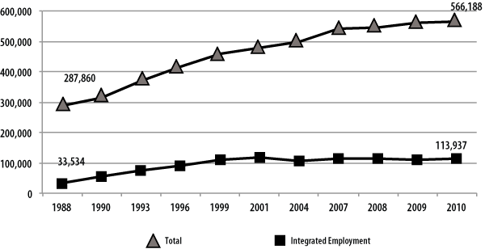
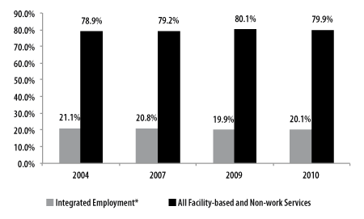
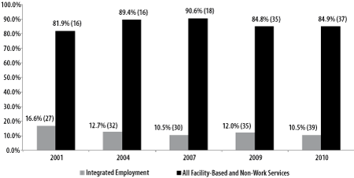
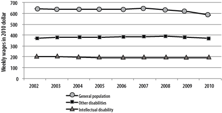
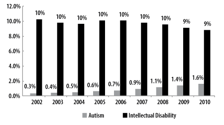
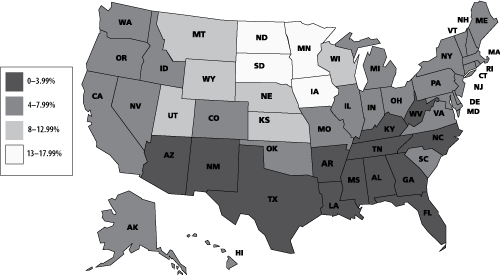
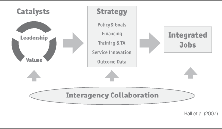

John Butterworth, Frank A. Smith, Allison Cohen Hall , Alberto Migliore, Jean Winsor, Daria Domin, Jaimie Ciulla Timmons,
Institute for Community Inclusion (UCEDD)
University of Massachusetts Boston
Winter 2012
The StateData employment report is a product of Access to Integrated Employment, a project of the Institute for Community Inclusion (ICI) at the University of Massachusetts Boston, supported in part by the Administration on Developmental Disabilities, U.S. Department of Health and Human Services, under cooperative agreement #90DN0216. The opinions contained in this report are those of the grantee and do not necessarily reflect those of the funders.
The authors would like to express sincere thanks to our collaborators at the National Association of State Directors of Developmental Disabilities Services, including Nancy Thaler, Chas Moseley, and Rie Kennedy-Lizotte. Additionally, the authors acknowledge the contributions of ICI’s entire StateData team, including Bill Kiernan and Suzzanne Freeze, as well as David Temelini and Anya Weber, who assisted in the editing, layout, and production of this report. Lastly, Marcos Elugardo has provided significant database management and assistance and we thank him for these efforts.
The topical chapter in this year’s report was authored by Jaimie Timmons, Allison Cohen Hall, Monica Cox, and Jennifer Bose.
Special thanks are directed toward the state administrators and key survey contacts in each state who consistently respond to the ICI’s Intellectual and Developmental Disabilities Agency National Survey of Day and Employment Services. Their expertise, insights, and assistance have helped to make this report possible.
Institute for Community Inclusion
University Center for Excellence in Developmental Disabilities
University of Massachusetts Boston
100 Morrissey Boulevard
Boston, Massachusetts 02125
ici@umb.edu
www.communityinclusion.org
www.statedata.info
www.selnmembers.org
www.facebook.com/communityinclusion
twitter.com/communityinclusion
Butterworth, J., Smith, F., A., Hall, A.C., Migliore, A., Winsor, J., Domin, D., Timmons, J.C. (2012). StateData: The national report on employment services and outcomes. Boston, MA: University of Massachusetts Boston, Institute for Community Inclusion.
Supporting people with all types of disabilities to participate in the labor market is a priority concern for federal and state policy makers (Kiernan, Hoff, Freeze, & Mank, 2011; NACDD, 2011).But despite this clear policy intent, there remains a significant gap in employment rates between people with and without disabilities. In 2010, individuals with disabilities ages 18 to 64 living in the community had an employment rate of 33.4 percent, compared with an employment rate of 72.8 percent for individuals without disabilities (American Community Survey, 2010, StatsRRTC, 2011). Labor force statistics for November 2011estimate that 18 percent of working-age adults (ages 16 and over) with disabilities are employed, compared with 64 percent of those without disabilities (Bureau of Labor Statistics, December, 2011).
Nationwide resources and priorities have not yet realigned to expand employment, but there is substantial evidence that individual states and community rehabilitation providers are increasing efforts around community employment and focusing on outcomes. Analysis of the FY2004–2005 National Survey of Community Rehabilitation Providers showed that the majority (81 percent) of those entering some type of integrated employment worked in individual jobs. Of those people, most were paid above federal and state minimum wage levels by their employers and received paid time off (Boeltzig, Timmons, & Butterworth, 2008).
A growing number of advocates and states are using Employment First as a guiding principle for both policy and practice. Although no universal definition of Employment First exists, the policies, practices and strategies focus on integrated, community-based employment as the desired outcome for individuals with disabilities and as the priority for state funding (Niemiec, Lavin, & Owens, 2009).Employment First efforts are being realized through community organizations, state-level teams through APSE, and grass-roots efforts (Flippo& Gardner, 2011).
For over 20 years, the Institute for Community Inclusion (ICI) has been home to Access to Integrated Employment. This national data collection project on day and employment outcomes funded by the Administration on Developmental Disabilities has described the nature of day and employment services for individuals with intellectual and developmental disabilities (IDD) and contributed to a comprehensive understanding of the factors that influence employment outcomes at the individual, service-provider, and state-policy level.
This report provides statistics over a 20-year period from several national datasets that address the status of employment and economic self-sufficiency for individuals with IDD. The report contains three major sections:
Data from four sources is included: the ICI’s National Survey of State Intellectual and Developmental Disability Agencies’ Day and Employment Services (from FY1988, 1990, 1993, 1996, 1999, 2001, 2004, 2007, 2008, 2009, and 2010), and datasets from the Social Security Administration, state vocational rehabilitation (VR) programs, and the U.S. Census Bureau (The American Community Survey).
Each dataset sheds light on the continued economic disparities that people with IDD have experienced over the past two decades. More individuals continue to be supported in facility-based employment, typically earning sub-minimum wage, than in integrated employment, and growth in community-based non-work service continues. In the VR system, earnings of adults with disabilities are substantially lower compared to those in the general population. Overall, the findings suggest that across datasets, people with IDD experience greater levels of unemployment, underemployment, low wages, and poverty compared to those without disabilities.
Data presented for FY2010 highlights the economic and employment disparities for individuals with IDD. While some data suggest progress (e.g., the positive effect of enrollment in post-secondary education on employment outcomes for those with cognitive disabilities), overall this report demonstrates the increasing need for policies and initiatives that prioritize employment. The evolving shift in states toward Employment First policies can make an important contribution to raising expectations, improving outcomes, and increasing self-sufficiency for individuals with intellectual and developmental disabilities.
“We have been prepared enough. Get us real jobs. Close sheltered workshops.”—Self-Advocates Becoming Empowered, www.sabeusa.org
Enabling people with disabilities to enter the labor market is a priority concern for federal and state policy makers (Silverstein, Julnes, & Nolan, 2005; Kiernan, Hoff, Freeze & Mank, 2011; NACDD, 2011). Policy shifts over the last two decades have established an increasing emphasis on integrated employment, and the federal government has set the tone for broad-based systems change (Rogan &Rinne, 2011).
Even with this clear policy intent, there remains a significant gap in employment rates between people with and without disabilities. In 2010, individuals with disabilities ages 18 to 64 living in the community had an employment rate of 33.4 percent. Individuals without disabilities in the same age group had an employment rate of 72.8 percent (American Community Survey, 2010; StatsRRTC, 2011). Labor force statistics from November 2011estimate that 18percent of working-age adults (ages 16 and over) with disabilities are employed, compared with 64percent of those without disabilities (Bureau of Labor Statistics, December 2011).
Labor force data also indicate that workers with disabilities have experienced significantly higher levels of job loss and hardship during the recent recession (Kaye, 2010; Fogg, Harrington, & McMahon, 2010). For people with intellectual and developmental disabilities (IDD), the disparity in employment participation widens further. In FY2010, community rehabilitation providers (CRPs) responding to a national survey reported that only 19percent of the individuals with IDD receiving services were accessing individual integrated employment supports (Domin& Butterworth, 2012). Data suggest that those who are employed work limited hours with low wages (Mank, 2003; Boeltzig, Timmons, & Butterworth, 2008; Human Services Research Institute, 2009). At the same time, participation in sheltered employment and non-work services has grown steadily, suggesting that employment services continue to be viewed as an add-on service rather than a systemic change (Butterworth, Smith, Hall, Migliore, & Winsor, 2011; Mank, 2003; Domin& Butterworth, 2012).
Although nationwide resources and priorities have not realigned to expand employment, there is substantial evidence that individual states and CRPs are increasing efforts around community employment and focusing on outcomes. In FY2010, Connecticut, Georgia, New Hampshire, Oklahoma, Washington, and Wisconsin all reported that more than 40 percent of individuals receiving day and employment services were receiving integrated employment services. Analysis of the FY2004–2005 National Survey of Community Rehabilitation Providers showed that the majority (81 percent) of those entering some type of integrated employment worked in individualized jobs in the community. Of those people, most were paid above federal and state minimum wage levels by their employers and received paid time off (Boeltzig, Timmons, & Butterworth, 2008).
Recently, as an outgrowth of the ICI’s Access to Integrated Employment project, state IDD agencies have come together as members of the State Employment Leadership Network, a membership roundtable co-managed with the National Association of State Directors of Developmental Disabilities Services. The SELN is dedicated to expanding employment opportunities for individuals with IDD. A growing number of advocates and states are using Employment First as a guiding principle in policy and systems change.
Employment First is being recognized nationally as a policy path towards greater community employment. In 2009, APSE reported that 12 states were actively involved in Employment First initiatives or considering the launch of similar local efforts within their state (Niemiec, Lavin, & Owens, 2009). Currently over 30 states have some form of policy or grassroots strategy that addresses Employment First, and at least 15 states have a formal policy or legislation (Hoff, 2012). In 2008, the Office of Disability and Employment Policy brought together key leaders in the field to discuss “employment first” policies in states where sheltered employment with sub-minimum wages and non-work day activities are no longer acceptable employment outcomes (Romano, 2009). The National Association of Councils on Developmental Disabilities (NACDD) formally endorsed an Employment First position as critical in advancing opportunities for people with developmental disabilities (NACDD, 2011). The Alliance for Full Participation, a coalition of disability advocacy organizations, established employment as the priority for their 2011 national summit. Over 1,250 people participated in the “Real Jobs--It’s Everyone’s Business” summit in Washington, DC. This marked the mid-point in a campaign to double integrated employment for people with intellectual and developmental disabilities by 2015 (AFP, 2011). This goal has been referred to as the “national employment challenge” and is being furthered through community organizations, state-level teams, and grass-roots efforts (Flippo & Gardner, 2011).
Despite advances in federal policy and the leadership of some high-performing states, widespread expansion of integrated employment has not occurred on a national level. Several factors present continuing challenges.
State and federal policy do not consistently prioritize employment. Despite spending millions of dollars on secondary education, adult community services, Social Security disability benefits, transportation, and comprehensive healthcare for Americans with disabilities, few of these resources encourage or reward integrated community employment (Niemiec, Lavin, & Owens, 2009). State systems continue to invest in sheltered employment and non-work services. While the number of individuals with IDD in integrated employment is growing, the number participating in sheltered employment and non-work services has grown even more rapidly over the past decade, and CRPs that have closed a facility-based program report that state agencies are rarely a catalyst for change (Butterworth, Fesko, & Ma, 2000). Expansion of community-based non-work services has competed with integrated employment, despite evidence that these services are loosely defined and do not consistently achieve their stated goals of community membership (Sulewski, Butterworth, & Gilmore, 2008; Sulewski, 2010).
Using data from the ICI’s National Survey of State Intellectual and Developmental Disability Agencies’ Day and Employment Services, we estimate that the total number of people served by state IDD agencies increased 97 percent (from 287,860 to 566,188) between 1988 and 2010. Over this same period of time, the number of people receiving integrated employment services increased 240 percent (from 33,534 to 113,937). However, much of this growth occurred between 1988 and 1999. Focusing on more recent data from 1999 to 2010, growth in integrated employment has not kept pace with the overall growth in the total number of individuals receiving services. Between 1999 and 2010, the estimated total number of individuals receiving services increased 24 percent while the number of individuals receiving integrated employment services only increased by five percent. Concurrently the percentage of individuals receiving integrated employment services declined from 23.7 percent to 20.1 percent.
CRPs have not reallocated resources to community employment. In a national survey of CRPs that provide sub-minimum wage employment, 89 percent of respondents indicated that sheltered employment was a necessary service, 69 percent responded that individuals with IDD were unable to earn minimum wage, and only 47 percent indicated that their organization had a formal plan to expand integrated employment (Inge, Wehman, Revell, Erickson, Butterworth, & Gilmore, 2009). Agency leaders report multiple obstacles to organizational change, including staff resistance, family resistance, and funding structures that do not adequately support community-based services for people with high support needs (Rogan & Rinne, 2011). However, in their recent study of organizational changeover from sheltered workshops to the provision of community employment supports, Rogan and Rinne (2011) found several similarities among successful organizations. The reasons for change, role of leadership, approaches to increasing employment outcomes, and resources used to support the shift to community services were found to be common factors in the organizational change process.
Respondents to the ICI’s 2010–2011 National Survey of Community Rehabilitation Providers reported that only 19 percent of individuals with IDD participated in individual employment services, only a slight increase from the 18 percent reported in 2002–2003. An additional 9.5 percent of individuals were reported to be working in mobile work crews or enclaves that met the definition of group supported employment. The majority of individuals participated in facility-based or non-work services, including 25.2 percent in facility-based work and 43 percent in non-work services. The largest growth was reported in non-work services. Between 2002 and 2010, participation in non-work services grew from 33 percent to 43 percent, offset by a decline in the percent of individuals participating in facility-based work (Domin& Butterworth, 2012).
Funding mechanisms vary across states and do not always reflect policy priorities. Funding is a central tool for improving the quality and range of employment service options. In an environment of increasing fiscal demands and limitations, and expansion of self-directed services and individualized budgeting, there is a growing need for state IDD systems to engage in rate-setting and funding discussions that are rooted in their priorities and long-term goals. An analysis of five states’ employment funding structures suggests that there is no “best” approach in terms of funding methodologies, but there are several key elements (Hall, Freeze, Butterworth, & Hoff, 2011).
Rate and contracting structures should be selected with a clear underlying intent regarding the goals of the system. Unambiguous definitions and service categories should also reflect these priorities. States with policy and funding alignment pay more for desired outcomes (a job in the community) and less or not at all for outcomes that are not a priority. Tying rates and other funding decisions, such as who gets funding, to the ultimate goals of the system sends an unequivocal message about the expectations of the funder. This includes clarity about which supports are and are not covered by a rate. States need to clearly define their expected outcomes, and then develop rates and methodologies that adequately compensate providers for achieving these goals. Keeping funding strategies goal-focused includes not only developing incentives but also eliminating disincentives to achieving policy aims. Hall and colleagues (2011) advocate for effective funding systems to be goal-focused and consistent with larger systems strategies.
Best practices in job support and job development are not consistently implemented. Emerging practices such as job creation, customized employment, and facilitation of natural supports are rarely used in practice at the direct-support level, reflecting a need to address direct-support professional training, qualifications, and job roles. For example, in the 2002–2003 ICI Survey of CRPs, only 35 out of more than 38,000 individuals with IDD were identified as being supported in self-employment. More recent survey findings indicate that less than half a percent of individuals served are supported in self-employment (510 out of 150,330 or .3 percent of individuals with IDD). Findings also suggest that direct-support professionals do not consistently implement evidence-based practices such as person-centered career planning, use of personal networks, and job negotiation (Migliore, Hall, Butterworth & Winsor, 2010; Migliore, Butterworth, Nord, Cox, & Gelb, in press).
Individual employment outcomes have not progressed. Findings from the ICI’s FY2004–2005 Individual Employment Outcomes Survey show that the majority of individuals with IDD work part-time and predominantly in the entry-level service industry, annual income remains low, and individuals have limited access to employee benefits such as health insurance (Boeltzig, Timmons, & Butterworth, 2008). A longitudinal comparison of the quality of supported employment outcomes shows similar results: despite slight improvements in some areas such as worksite integration, work rate, and work quality, individuals obtaining jobs in the late 1990s worked similar hours, earned similar wages, and held similar types of jobs compared to those obtaining jobs in the early 1990s (Mank, Cioffi, &Yovanoff, 2003). Additionally, Schur, Kruse, Blasi, and Blank (2009) found that employees with disabilities have less job security, experience higher levels of supervision and lower rates of participation in decision-making, and receive lower levels of company-sponsored formal training and informal training from coworkers.
Disability and employment data systems are fragmented. A growing emphasis on government accountability has increased interest in the collection and use of employment outcomes data. At the national level, data on employment for individuals with disabilities are available through multiple data collection systems. However, many disability data systems are only loosely coordinated across agencies. These initiatives provide very high level data that are largely cross-disability and challenge the examination of outcomes for specific populations or state-level services. Mathematica Policy Research recently conducted a review of 40 national surveys that cover a range of topics likely to be of importance to the policies, programs, and issues that affect the lives of people with disabilities for the Office of Disability, Aging, and Long-Term Care Policy. Among other things, they found that few surveys contain measures to specifically identify individuals with cognitive or intellectual disabilities (Livermore, Whalen, and Stapleton, 2011)
Research on states that support a high percentage of individuals in integrated employment suggests that a clear and visible data collection system that provides individual outcome data is critical (Hall, Butterworth, Winsor, Gilmore, & Metzel, 2007).Some states are beginning to use their data collection systems as part of an overall plan to communicate about and facilitate their states’ progress toward greater integrated employment (Hall, Winsor, Butterworth, 2011). The data collection process, as well as the data it produces, are critical in informing and promoting conversation about employment. While most states are at various stages in the process of refining their systems, the use of data is one of the most important tools state IDD agencies can use to develop, implement, and evaluate their long-term goals.
Services and Supports Used by People with Intellectual and Developmental Disabilities
Employment supports are provided within a context of state and federal disability policy, workforce development policy, income maintenance and health-care policy, and a wide array of work-related supports including transportation, housing, welfare, and childcare. Core supports are funded by state IDD and VR agencies, and delivered by a network of over 12,000 CRPs. State trends and individual decisions about supports and employment are influenced by state funding for employment support, Medicaid and Social Security Administration policy, and CRP priorities.
State IDD agencies. State IDD agencies remain the primary source of long-term funding and service coordination for individuals with IDD, providing funding and monitoring of a wide range of day and employment services. They support an estimated half a million adults in employment and day services nationally. The services they provide include employment supports, traditional facility-based options including sheltered workshops and non-work day habilitation programs, and community integration services (also referred to as community-based non-work services). Given their essential role, examining state IDD policies and practices is vital for understanding the factors that influence employment outcomes.
State vocational rehabilitation (VR) agencies. State VR agencies provide services to over one million people annually, with over 600,000 completing services and having their cases closed in each fiscal year. Approximately 8.9 percent, or 49,697, of those case closures can be identified as individuals with ID (people with a primary disability or secondary cause of impairment code of intellectual disability).
One-Stop Career Centers. One-Stop Career Centers, established and supported under the Workforce Investment Act, provide an underused resource for individuals with IDD and other disabilities. In 2010, 617,314 individuals with disabilities registered as job seekers for Wagner Peyser-funded One-Stop services. Between 2006 and 2010, the number of registered job seekers with disabilities increased by nearly half (49.5 percent). Only 699 individuals with ID who closed out of state VR services in 2010 were identified as referrals from One-Stop Centers
Medicaid. Medicaid is both a primary funder for health care for individuals with IDD and the largest federal source of funding for day and employment services under the Home and Community Based Services waiver program. Despite expansion of Medicaid initiatives to support employment, including the Medicaid Infrastructure Grant program and expansion of state Medicaid buy-in programs, there has not been a preference for integrated employment in Medicaid-funded services, and state Medicaid agencies have limited involvement in employment initiatives.
In a study by Sulewski, Gilmore, and Foley (2006), state Medicaid agencies were asked about the provision of services to working people with disabilities and collaboration with disability- and employment-related agencies and services. Only one-third to one half of respondents was involved in Workforce Investment Act implementation at the state level or was implementing a Medicaid buy-in option for working adults with disabilities. More recent data indicate that in 2008, 42 states were operating a Medicaid Buy-In program to extend Medicaid coverage to working people with disabilities (Kehn, Croake, & Schimmel, 2010). Sulewski and colleagues found that collaboration with disability- or employment-focused agencies occurred at similarly moderate rates (Sulewski, Gilmore & Foley, 2006).
In September 2011, the Centers for Medicaid and Medicare Services (CMS) issued an Informational Bulletin that “highlights the importance of competitive work for people with and without disabilities and CMS’s goal to promote integrated employment options through the waiver program.” The Bulletin also provides guidance to states on core service definitions. While CMS specifies that this guidance is a clarification of existing policy, it does provide a strong statement of the importance of work in adult life and provides updated and new service definitions that define a pathway to employment (Centers for Medicaid and Medicare Services, 2011).
Social Security. Social Security Administration (SSA) work incentives such as the Plan for Achieving Self Support (PASS) and Impairment-Related Work Expenses (IRWE) are designed to support employment by allowing individuals to exclude money, resources, and certain expenses from total earned income calculations. SSA also administers the Ticket to Work program, designed to provide beneficiaries with the ability to purchase VR, employment, and other support services from any participating employment network or state VR agency. Despite SSA’s initiatives, work incentives and the Ticket to Work program remain underused. In 2010, 1,384 SSI recipients had PASS plans and 3,486 had IRWEs in place. That same year, the rate at which SSI recipients with ID worked was almost three times that of SSI recipients without ID (13.2 percent versus 4.9 percent) (SSA, 2010).
Community rehabilitation providers (CRPs). CRPs and their staff are the primary source of day and employment supports for people with IDD. Based on the results of recent efforts to build a comprehensive list of CRPs, the ICI estimates that over 12,000 CRPs nationwide offer vocational services to individuals with disabilities. The majority (70 percent) of those served by CRPs are individuals with IDD (Metzel, Boeltzig, Butterworth, Sulewski, & Gilmore, 2007; Inge et al, 2009). Over two thirds of CRPs provide work and non-work services in both integrated and facility-based settings (Metzel, Boeltzig, Butterworth, Sulewski, & Gilmore, 2007).
Findings indicate that 74 percent of individuals with IDD received sheltered employment, day habilitation services, or non-work community integration services, while only 26 percent were working in integrated employment. Furthermore, of the 26 percent in integrated employment, eight percent, or almost one-third, were in group supported employment models, including enclaves and mobile work crews. In a national survey of CRPs who provide sub-minimum-wage employment, respondents reported that only 8.7 percent of staff work with individuals earning minimum wage or higher (Inge et al, 2009). More recent CRP survey findings from 2010-2011 indicate that only 19 percent of individuals with IDD receive individual integrated employment supports, and 15 percent of individuals with IDD worked for pay in individual integrated employment at the time of the survey (Domin & Butterworth, 2012)
States vary widely in the extent to which they support integrated employment. Research suggests a range of factors that influence access to employment opportunities and areas of focus for state policy and strategy.
High-performing state IDD agencies. The ICI’s research on high-performing state IDD agencies has identified policies and practices that support improved employment outcomes. The ICI identifies high-performing states based on the percentage of those served by the state’s IDD agency who participate in integrated employment and the rate of growth in integrated employment. Strategies that characterize high-performing states include flexibility in funding and policies; communication of values through data, rewards, and funding incentives; and innovation diffusion through relationships and training (Hall, Butterworth, Winsor, Gilmore, & Metzel, 2007). These strategies are most successful when they are embedded within the context of a solid values base, a network of dedicated stakeholders, and clarity about systemic goals.
Community-based non-work (CBNW).As an emerging service model, reported participation in CBNW (activities that do not involve paid employment and take place in integrated settings in the community) has grown steadily over the past 15 years. Thirty state IDD agencies reported supporting individuals in CBNW services in FY2010. These states indicated that 47percent of individuals that they served participated in CBNW in FY2010. CRPs responding to the 2010–2011 CRP survey reported a more modest but still meaningful role for community-based non-work services, indicating that 16.4 percent of individuals with IDD participated (Domin& Butterworth, 2012).This difference reflects both the ability of CRPs to more accurately report on individual service settings, and the inclusion of data across all states--not just states that report CBNW as a service option.
Results from a module in the 2001 survey of state IDD agencies indicated that CBNW is loosely defined with respect to requirements, activities, populations served, and goals (Sulewski, Butterworth, & Gilmore, 2008). Although CBNW has the potential to enhance the lives of people with disabilities, these findings raise concerns. Key questions include how CBNW services can be provided without taking resources or focus away from expanding integrated employment (Sulewski, Butterworth, & Gilmore, 2008; Sulewski, 2010), and the extent to which CBNW services support true community inclusion. CRPs, for example, have indicated that they more often support group and disability-specific community-based non-work activities compared with other more individualized and integrated activities. It is unclear to what extent the growth in CBNW merely represents a redefinition of day habilitation and other non-work service models.
Collaboration with VR. Policy under the Medicaid Home and Community Based Waiver program requires that states refer individuals to VR for employment support prior to providing IDD agency supports under waiver funding. However, collaboration is impeded by a wide range of systemic barriers, including disagreement about target populations, differing commitment to the goal of employment, differences in language and culture, and differences in resource availability (Timmons, Cohen, &Fesko, 2004; Timmons, Fesko, & Cohen, 2004). Despite such barriers, collaborative initiatives between VR and IDD agencies are an important element in supporting stronger employment outcomes (Boeltzig, Timmons, &Marrone, 2008; Hall, Boeltzig, Hamner, Timmons, &Fesko, 2006).
CRPs and integrated employment. Considerable variation exists in the quality of CRP service provision (Surdick, Pierson, Menz, Hagen-Foley, &Ussif, n.d.). Some providers have successfully shifted emphasis to integrated employment support, including closing one or more facility-based programs (Brooks-Lane, Hutcheson, &Revell, 2005; Butterworth, Fesko, & Ma, 2000). Butterworth, Gilmore, Timmons, Inge, and Revell (2007) found that smaller organizations (those serving one to 40 individuals) had significantly higher rates of participation in individual and integrated employment. In addition, organizations that served all or mostly individuals with IDD had significantly lower participation in individual employment and significantly higher participation in sub-minimum wage employment.
The survey results also suggest that organizational priorities and goals are critical influences in outcomes and may play a more central role than commonly accepted factors such as fear of benefits loss, family concerns, or transportation availability. Rogan &Rinne (2011) found that agencies that successfully converted their services provided extensive staff training and rewrote staff position descriptions to emphasize integrated employment services. Their findings also showed the importance of setting benchmarks and gathering data to evaluate outcomes and progress (also see Hall, Winsor, Butterworth, 2011; Hall, 2009).
CRPs and direct-support personnel. Although researchers have investigated the competencies and training needs of direct-support professionals (DSPs) in residential settings (Larson & Hewitt, 2005; Larson, Doljanac, Nord, Salmi, & Hewitt, 2007), very little has been done to examine the same issues regarding DSPs who assist job seekers with disabilities. DSPs in integrated employment face complex responsibilities, ranging from dealing with the dynamics of a business world driven by profit to addressing the personal needs of people with disabilities (Fesko & Temelini, 1997; Test, Flowers, & Hewitt, 2004; Wehman & Targett, 2001). Survey research suggests that employment specialists do not consistently use established promising practices, including spending time with individuals in community settings, working with an individual’s family and acquaintances, or negotiating job responsibilities with an employer (Migliore, Hall, Butterworth, & Winsor, 2010; Migliore, Butterworth, Nord, Cox, & Gelb, in press). Expanding knowledge about the roles and competencies of DSPs in employment is an area in need of further research.
Individual and family factors. Research has demonstrated that wages and hours worked increase dramatically as individuals move from facility-based to integrated employment. Less tangible benefits include expanded social relationships, heightened self-determination, and more typical job acquisition and job roles (Hall & Kramer, 2009; Mank, 2003; Murphy, Rogan, Handley, Kincaid, & Royce-Davis, 2002). Beyer, Brown Akandi, and Rapley (2010) found higher quality of life reported among individuals with IDD in supported employment when compared to those in sheltered employment or day habilitation programs.
Despite these advantages, individuals continue to enter facility-based and non-work services at a higher rate than integrated employment. Recently, researchers investigated what factors influence adults with IDD and their families to choose a facility-based setting over community-based employment (Migliore, Grossi, Mank, & Rogan, 2008; Migliore, Mank, Grossi, & Rogan, 2007). They found that the majority of respondents would at least consider community employment. Long-term placement, safety, and social environment emerged as the most important factors when choosing an employment setting. Other research has also found family concerns to affect the expansion of integrated employment (Rogan & Rinne, 2011; Hall & Kramer, 2009).
Lotan and Ells (2010) consider decision-making for adults with IDD in the context of autonomy, self-determination, empowerment, and respect for people. Empirical research has found that a collection of people and factors are considered influential in employment-related decision-making of individuals with IDD. These include the family in the formative years, school-based staff and early employment experiences, the culture of the CRP, the priorities of the job developer, and personal preferences of the individual. Through an understanding of these persuasive elements, and the points in the employment process at which they occur, critical intervention points can be used to optimize employment choices and outcomes (Timmons, Hall, Winsor, Wolfe, & Bose, 2011).
This report provides statistics over 20 years from several existing national datasets that address the status of employment and economic self-sufficiency for individuals with intellectual and developmental disabilities.
Readers should note that the authors use abbreviations for both intellectual disability (ID) and intellectual and developmental disabilities (IDD) in this report. We do this because data sources used in this report allow us to look at these two distinct groups at different levels of specificity.
We provide a comprehensive overview that describes national trends in employment for people with IDD, and the appendix provides individual state profiles with data from several sources. These include the ICI’s National Survey of State Intellectual and Developmental Disability Agencies’ Day and Employment Services (from FY1999, 2001, 2004, 2007, 2008, 2009, and 2010), and datasets from the Social Security Administration, Vocational Rehabilitation, Bureau of Labor Statistics, and the American Community Survey. The appendix provides a state-by-state analysis of trends across each dataset.
The topical chapter included in this report is intended to shed light on employment data from a different perspective. Accompanying the national large-scale datasets that are presented in this book, we offer a qualitative, in-depth look into promising practices that are implemented by state IDD agencies to increase employment opportunities.
National Survey of State Intellectual and Developmental Disability Agencies’ Day and Employment Services
This survey is part of a longitudinal study commissioned by the Administration on Developmental Disabilities to analyze community-based day and employment service trends between FY1988 and 2010 for individuals with intellectual and developmental disabilities and closely related conditions. Between 1988 and 2004, the survey was administered on a semi-annual basis; however, starting in 2007, information has been collected annually. The most recent version of the survey is focused on state IDD agency data for FY2010.
The survey is designed to provide the following information:
Trends in the number of people served in integrated employment, facility-based employment, and facility-based and community-based non-work programs.
Trends in the number of individuals waiting for services.
Funding sources that are being used to support day and employment services.
The allocation of funds across day and employment services.
The survey was developed with input and field-testing support from state IDD agency administrators. Core survey variables include the number served (total and by day and employment service categories), waiting lists, and expenditures by service and total funding by source. All questions focus on community-based day or employment services monitored by the state IDD agency, including services funded by another state agency (such as the Medicaid agency), even if the IDD agency does not provide or directly contract for the service.
In 1996, the new category of community-based non-work service was added. The most recent changes to the survey occurred in 2010. States are now asked not only to provide the number of individuals in each service category, but also if they provided the service. Additionally, states are now asked specific questions about the number of individuals that they serve who are working for pay in jobs in the community in order to distinguish between services and employment outcomes. Beginning in FY2001, states were offered the opportunity to complete the survey using a secure website. Each state’s responses from the previous year are listed for reference and updating if necessary.
The survey was most recently administered in June 2011 to IDD agencies in all 50 states and the District of Columbia. The agency director from each state and the staff members who responded to the previous survey were contacted to ensure consistency in the data reported. Initial contact was made by email and follow-up was completed via email and telephone. States were asked to complete the most recent survey using data from FY2010.
The survey home page provides general information and instructions for completing the survey. Additionally, instructions and guidance for responding to the survey questions are included within each question. The survey requests data on the total number of individuals served; however, if a state does not have the capacity to adjust for individuals who enter or exit the system during a fiscal year and can only provide the number served at the end of the fiscal year (or at some other specific point in time), there is a location on the survey to provide this information.
Each step of the survey provides an opportunity for states to enter explanatory comments on their data. The final step of the survey offers states the opportunity to make suggestions for how the survey could be revised in the future. States are also asked to identify the information source used to provide service category data. There is a definitions page that can be referred to from any page of the survey. A summary of the service category definitions can be found in Table 1.
After a state has finalized its response to the survey, ICI staff review the data and follow up with states whose data shows an unexpected increase or decrease in the total number served, number served in a service category, or total funding.
|
Type of Setting/ Service: |
Work |
Non-Work |
|---|---|---|
|
Community |
Integrated employment: Integrated employment services are provided in a community setting and involve paid employment of the participant. Specifically, integrated employment includes competitive employment, individual supported employment, group supported employment, and self-employment supports. |
Community-based non-work:Community-based non-work includes all services that are focused on supporting people with disabilities to access community activities in settings where most people do not have disabilities. It does not include paid employment. |
|
Facility |
Facility-based work: Facility-based work includes all employment services that occur in a setting where the majority of employees have a disability. These activities occur in settings where continuous job-related supports and supervision are provided to all workers with disabilities. This service category is typically referred to as a sheltered workshop, work activity center, or extended employment program. |
Facility-based non-work: Facility-based non-work includes all services that are located in a setting where the majority of participants have a disability and does not involve paid employment of the participant. |
This report used regression analysis to estimate the total number of individuals served by state IDD agencies and the number of individuals served in integrated employment when these figures were not reported. To increase stability of the estimation for states that did not report the last data points, data from the literature was added. The 2006 and 2009 data were drawn from the most recent literature available (Braddock et al., 2011). This procedure was adopted for ten states. Estimates were also computed for missing data regarding the community-based non-work services and the facility-based work and non-work services. For these variables, however, estimates were only accepted for missing data points that were comprised between two valid data points in each time series and only if the missing data points did not outnumber the valid data points.
Rehabilitation Services Administration 911(RSA-911) Database
The RSA-911 is a public access database that captures individual characteristics, services provided, and employment outcomes at the point of closure from VR services. Records are at the individual level, covering over 600,000 case closures per year.
|
Term |
Explanation |
|---|---|
|
Closure |
Data in the RSA-911 are collected at the time of closure (conclusion) of VR services. The VR closure categories used in this report include closure with an employment outcome after receiving services (formerly Status 26) and closure without an employment outcome after receiving services (formerly Status 28). |
|
Successful rehabilitation |
Closure with an employment outcome including integrated employment (including supported employment), self-employment, state-agency-managed business enterprise, homemaker, and unpaid family worker. |
|
Rehabilitation rate |
The percentage of individuals receiving services who achieve a successful rehabilitation. Calculated as: closures with an employment outcome / closures with an employment outcome + closures without an employment outcome after receiving services. Individuals with a case that was closed prior to development of an Individual Plan for Employment are not included in this calculation. |
|
Supported employment services |
Supported employment may be funded from Title VI-b funds, funds dedicated to supported employment under the Rehabilitation Act, or general rehabilitation funds. |
For the purpose of this report, a person was considered to have an intellectual disability (ID) if code 25 (Mental retardation in the RSA-911 dataset) was reported as the cause of either a primary or secondary impairment to employment. This is different from previous reports in which we included people with other developmental disabilities such as autism, cerebral palsy, and epilepsy. In addition, in previous editions we focused exclusively on the primary, rather than primary and secondary, cause of impairment.
American Community Survey
The American Community Survey (ACS) is a national survey designed by the U.S. Census Bureau to better understand changing communities. The ACS collects information from all 50 states and D.C. on topics such as disability, age, race, income, commute time to work, home value, veteran status, and other demographic and personal data (www.census.gov). To gather information on people with disabilities, the Census Bureau asks a series of six questions on long-lasting conditions and functional impairments. Any person who indicates having at least one of these conditions or functional impairments is coded as having a disability. The individual items used to collect these data points are outlined in Table 3.
Due to changes implemented in the American Community Survey beginning in 2008, data for people with disabilities for 2007 and earlier years should not be compared with data beginning in 2008. The sensory disability item used from 2000–2007 was eliminated and two distinct items for visual and hearing disabilities were added beginning in 2008. The employment disability variable that was used from 2000–2007 was eliminated from the survey beginning in 2008. Additional changes in wording for other disability items included removing the duration of impairment from some questions and adding the term “serious” to focus on long-term/more severe impairments.1
|
Term |
Explanation |
|---|---|
|
Employment rate |
The percent of civilian, non-institutionalized working-age (16–64 years old) individuals who have a job. |
|
Disability categories |
The 2000 through 2007 ACS classifies individuals as having a disability based on: 1) Presence of a long-lasting condition in one or both of the following areas: Blindness, deafness, or a severe vision or hearing impairment (sensory disability). Substantial limitation in the ability to perform basic physical activities, such as walking, climbing stairs, reaching, lifting, or carrying (physical disability). And/or 2) Difficulty doing any of the following activities because of a physical, mental, or emotional condition lasting six months or more: Difficulty learning, remembering, or concentrating (mental disability). Difficulty dressing, bathing, or getting around inside the home (self-care disability). Difficulty going outside the home alone to shop or visit a doctor’s office (go-outside-the-home disability). Difficulty working at a job or business (employment disability). The 2008 and 2009 ACS classify individuals as having a disability based on: 1) Answering affirmatively to one or more of the following items: Is this person deaf or does he or she have serious difficulty hearing (hearing disability)? Is this person blind or does he or she have serious difficulty seeing even when wearing glasses (vision disability)? Does this person have serious difficulty walking or climbing stairs (ambulatory difficulty)? Does this person have difficulty dressing or bathing (self-care difficulty)? Because of a physical, mental, or emotional condition, does this person have difficulty doing errands alone such as visiting a doctor’s office or shopping (independent-living difficulty)? Because of a physical, mental, or emotional condition, does this person have serious difficulty concentrating, remembering, or making decisions (cognitive disability)? |
Social Security Administration (SSA)
These data are abstracted from the Supplement Security Income (SSI) Annual Statistical Report. The SSA reports work-incentive participation and the number of individuals receiving SSI who are working. Beginning with the 2010 SSI Annual Statistical Report, tables showing data by diagnostic group provide more specific detail for mental disorders in these categories: autistic disorders, developmental disorders, childhood and adolescent disorders not elsewhere classified, intellectual disability, mood disorders, organic mental disorders, schizophrenic and other psychotic disorders, and all other mental disorders. Data from previous years has three categories for mental disorders: retardation, schizophrenia, and other.
|
Program |
Definition |
|---|---|
|
Plan for Achieving Self Support (PASS) |
Allows a person with a disability to set aside income or resources to support achieving a specific work goal. Money set aside under a PASS plan is excluded both as current income and from the SSI resource limits. |
|
Impairment-Related Work Expense (IRWE) |
Allows people to exclude the cost of certain impairment-related services or items needed to earn income when determining the beneficiary’s current earned income for SSI eligibility and benefits. |
|
Section 1619(a) |
Allows people with disabilities to continue receiving SSI income even if their earned income is at Substantial Gainful Activity levels, i.e., the amount that would normally make them ineligible for SSI. |
|
Section 1619(b) |
Allows individuals to continue receiving Medicaid benefits if their earnings disqualify them from eligibility for SSI cash payments but are not enough to afford medical insurance. |
State Demographics
State demographics are from multiple data sources. State population is taken from the U.S. Census website (www.census.gov). Unemployment data is taken from the Bureau of Labor Statistics website (www.bls.gov).
The National Survey of State Intellectual and Developmental Disability Agencies’ Day and Employment Services (FY1999–2010)
The data reported here are the core elements of the Institute for Community Inclusion’s National Survey of State Intellectual and Developmental Disability Agencies’ Day and Employment Services. These data focus on participation in integrated employment, community-based non-work, and facility-based services. Data are solicited from the 50 states and the District of Columbia. The number of reporting states varied from 37 to 45 over the time studied (1999–2010). The researchers calculated national level estimates for the total number of people served by state IDD agencies as well as the total number of people who received integrated employment services. For some states, data reported by service setting represent duplicated counts because individuals were served in multiple settings. For these states, the percentage served across settings may add up to more than 100 percent. Other services, including services for individuals who are elderly, are not reported.
Major findings include the following:
Figure 1. Trend Line for Estimated Total Number of People Served by State IDD Agencies and Estimated Number Served in Integrated Employment
Figure 1 displays two trend lines. One trend line represents the estimated total number of people served by state IDD Agencies. The second trend line represents the estimated number served in integrated employment. The trend line timeline spans from 1988 to 2010 and includes data from the following years: 1988, 1990, 1993, 1996, 1999, 2001, 2004, 2007, 2008, 2009, 2010. The graph shows that in 1988, 287,860 people were served by state IDD Agencies and 33,534 were served in integrated employment. The trend line increases from 1988 to 2010. In 2010, the graph shows that 566,188 people were served by State IDD agencies and 113,937 were served in integrated employment.
|
State |
Total |
Percent Integrated Employment |
Percent Community- Based Non-Work |
Percent Facility-Based Work |
Percent Facility-Based Non-Work |
|---|---|---|---|---|---|
|
AK |
1,360 |
28% |
0% |
0% |
93% |
|
AL |
4,966 |
5% |
- |
1% |
94% |
|
AR |
1 |
- |
- |
- |
- |
|
AZ |
- |
- |
- |
- |
- |
|
CA |
74,273 |
15% |
71% |
14.5% |
0% |
|
CO |
5,357 |
25% |
75% |
25% |
56% |
|
CT |
9,287 |
53% |
47% |
5% |
0% |
|
DC |
- |
- |
- |
- |
- |
|
DE |
- |
- |
- |
- |
- |
|
FL |
21,507 |
15% |
- |
- |
- |
|
GA |
6,661 |
40% |
84% |
0% |
- |
|
HI |
1,499 |
7% |
89% |
- |
0% |
|
IA |
8,950 |
21% |
- |
31% |
47.5% |
|
ID |
- |
- |
- |
- |
- |
|
IL |
26,280 |
10% |
0% |
13% |
76% |
|
IN |
10,614 |
23% |
53% |
45% |
41% |
|
KS |
6,217 |
15% |
55% |
37% |
46% |
|
KY |
8,668 |
11% |
29% |
0% |
62% |
|
LA |
4,563 |
33% |
.5% |
33% |
33% |
|
MA |
14,039 |
25% |
17% |
26.5% |
52% |
|
MD |
11,476 |
39% |
0% |
0% |
60.5% |
|
ME |
4,133 |
23% |
77% |
0% |
- |
|
MI |
17,042 |
24% |
42.5% |
33% |
14% |
|
MN |
13,546 |
18% |
1 |
83% |
1 |
|
MO |
5,038 |
7% |
4% |
0% |
81% |
|
MS |
- |
- |
- |
- |
- |
|
MT |
1,789 |
11% |
- |
- |
- |
|
NC |
17,908 |
17% |
42% |
18% |
22% |
|
ND |
- |
- |
- |
- |
- |
|
NE |
3,785 |
6% |
28% |
9% |
83.5% |
|
NH |
2,366 |
51% |
47% |
2% |
0% |
|
NJ |
9,130 |
14% |
12% |
19% |
52% |
|
NM |
3,243 |
37% |
29% |
0% |
77.5% |
|
NV |
2,060 |
20% |
1% |
55% |
24% |
|
NY |
67,770 |
13% |
62% |
21% |
2% |
|
OH |
30,22 |
22% |
1 |
54.5% |
25.5% |
|
OK |
4,079 |
61% |
30% |
54% |
0% |
|
OR |
10,025 |
25% |
17% |
25% |
19.5% |
|
PA |
- |
- |
- |
- |
- |
|
RI |
- |
- |
- |
- |
- |
|
SC |
7,435 |
31% |
0% |
49% |
54% |
|
SD |
2,325 |
19% |
29% |
38% |
26% |
|
TN |
7,789 ¥ |
16% |
- |
- |
- |
|
TX |
44,053 |
7% |
30% |
- |
- |
|
UT |
2,796 |
23% |
76% |
- |
- |
|
VA |
11,574 |
21% |
3% |
7% |
69% |
|
VT |
2,561 |
37% |
63% |
0% |
0% |
|
WA |
8,271 |
89% |
5% |
9% |
0.1% |
|
WI |
13,702 |
20% |
26% |
46% |
52% |
|
WV |
- |
- |
- |
- |
- |
|
WY |
1,468 |
19% |
4% |
9% |
68% |
1 Data not provided
In FY2010, an estimated 566,188 individuals received day or employment supports from state IDD program agencies. This number grew from 458,650 in FY1999. The estimated number of individuals supported in integrated employment services increased from 108,296 in FY1999 to 113,937 in FY2010. State investment in supports continues to emphasize facility-based and non-work services rather than integrated employment services.
Figure 2 shows the trends in the percentage of people served in integrated employment and facility-based and non-work settings between FY2004 and FY2010. In FY2010, an estimated 20.1 percent of individuals receiving day supports from state IDD agencies received integrated employment services. The data demonstrate a decline in the estimated percentage of people served in integrated employment services (from 23.7 percent in 1999), suggesting that the growth seen in supported employment between the mid-1980s and mid-1990s has not continued.
Figure 2. Estimated IDD Agency Service Distribution by Year
Figure 2 is a bar chart that displays estimated IDD Agency service distribution for FYs 2004, 2007, 2009 and 2010. For individuals served in integrated employment, the percentages are as follows: 21.1% in 2004, 20.8% in 2007, 19.9% in 2009 and 20.1% in 2010. For individuals served in facility-based and non-work services, the percentages for the years displayed on the chart are as follows: 78.9% in 2004, 79.2% in 2007, 80.1% in 2009, and 79.9% in 2010.
The data also demonstrate an increase in the percentage of people served in facility-based and non-work settings. Variability in the number of states that are able to report data in these three individual service categories limits our ability to pinpoint the specific setting in which growth is occurring. However, analysis using data from states that are able to report data in each of the three service categories suggests that the participation in facility-based work has remained stable or declined slightly, and the percentage of individuals served in non-work settings is increasing.
Presently, states vary in their ability to report on funding for day and employment services by service setting. Figure 3 shows trends in funding allocation by service setting for states that reported these monetary figures. Facility-based and non-work settings continue to make up the largest percentage of expenditures for day and employment services. Collectively, states that reported funding for all facility-based work and non-work services (n=36) allocated 85 percent of the funding for all day and employment to services in these settings in FY2010. In contrast, states that reported funding for integrated employment (n=39) allocated 10.6 percent of the funding for all day and employment services to integrated employment services in FY2010.
While there has been a net decrease in the percentage of reported funds allocated toward facility-based work and non-work services since 1999, there has been little fluctuation over time in the percentage of funding allocated toward integrated employment, which peaked in 2001 at 16.6 percent but otherwise ranged between 9.6 percent and 12.7percent in all other years since 1999.
Figure 3. Percentage of Total Funding Allocation by Year (Number of States Reporting in Parentheses)
Figure 3 is a bar chart that displays percentage of total funding allocation by service setting for states that reported monetary figures for FYs 2001, 2004, 2007, 2009 and 2010. Funding allocation for all facility-based work and non-work services and the number of states that reported data (in parenthesis) for the fiscal years displayed on the chart are as follows: 81.9% (16) in 2001, 89.4% (16) in 2004, 90.6% (18) in 2007, 84.8% (35) in 2009, 84.9% (37) in 2010. Funding allocation for integrated employment and the number of states that reported data (in parenthesis) displayed on the chart are as follows: 16.6% (27) in 2001, 12.7% (32) in 2004, 10.5% (30) in 2007, 12% (35) in 2009, and 10.5% (39) in 2010.
Growth in community-based non-work. First added to the survey as a service option in FY1996 in response to state feedback, the number of states reporting providing CBNW services has grown from 18 in FY1996 to 30 in FY2010. Nationally, the reported participation in community-based non-work (CBNW) services has grown steadily for states that report it as a service, from 18.7 percent in FY1999 to 47 percent in FY2010. Community-based non-work services accounted for 57.7 percent of state IDD agency expenditures for FY2010, for states that reported expenditures for this service (n=27).
The rapid growth in CBNW services may reflect a growing emphasis on community presence, although the nature of the service that is being reported and the contribution of this service to community participation remains unclear. Data reported by community rehabilitation providers in a national survey suggests that only 16.4 percent of individuals with IDD participate in CBNW (Domin & Butterworth, 2012). While CRP and IDD agency responses are not directly comparable and may also reflect differing approaches to reporting duplication of service, the disparity raises concerns about how state agencies are defining and categorizing services. There is currently a limited amount of data on the structure, activities, and outcomes of this service, and states have not established clear service expectations or quality-assurance strategies (Sulewski, Butterworth, & Gilmore, 2008; Sulewski, 2010). While some states report service requirements for how much time CBNW participants spend in the community, it is possible that in some cases states have reclassified services from facility-based to community-based as the emphasis on community participation grows, even though substantial time is still spent in facility-based settings. As the prevalence of CBNW services grows, additional research is needed on whether these services enhance or impede integrated employment outcomes and how CBNW services contribute to meaningful daytime activities for individuals with IDD.
Funding from state, county, and local sources. State, county, and local IDD dollars are one of the largest sources of funds for day and employment services representing 26.8 percent of all funding for employment and day services. As a funding source that is directly controlled within each state, it is also one of the most flexible sources of dollars for day and employment services. States vary in their ability to report state, county, and local spending on IDD services. As the number of states able to report these figures increases, it will be interesting to examine both the cross-sectional and trend data for this type of funding. For states that have been able to report these figures, the allocation of these funds has varied based upon year and service category: integrated employment, community-based non-work, facility-based work, and facility-based non-work.
Total reported state, county, and local IDD dollars have decreased slightly, from $1,480,531,831 (n=25) in 1999 to $1,299,690,007(n=26) in 2010. The percentage of funds allocated to all facility-based services declined from 65 percent in 1999 to 51 percent in 2010, but did not result in a substantial increase in funds being allocated toward integrated employment; instead, dollars have shifted toward community-based non-work services. Reported dollars for community-based non-work increased from $279,490,187 (n=13) to $425,931,969 (n=17) between 1999 and2010. This change coincided with a decrease in the funds allocated toward facility-based non-work services from$470,893,634 (n=16) to $390,539,406 (n=17). One potential explanation for the significant redistribution of funds toward community-based non-work services is that traditional facility-based non-work services are being rebranded as community-based non-work services.
Since 2004, there has been an increase in the percentage of state, county, and local IDD funds allocated toward all community-based services. While this is hopeful and could be an indication that states are placing a greater emphasis on community inclusion, the fact remains that state, county, and local IDD dollars are increasingly being spent on CBNW services and not integrated employment. The trend toward CBNW services raises concerns about the clarity of the service system’s goals for community employment. It is highly likely, due to the lack of specificity of the goals of CBNW services (Sulewski, Butterworth, & Gilmore, 2006), that as funds transition to the community, non-work services are seen as an alternative rather than a complement to or an avenue towards integrated employment services. Sulewski, Butterworth, and Gilmore (2008) recommend that states use CBNW services as a supplement to, rather than a substitute for, integrated employment services. States need to clarify the intent and goals of CBNW services and their relationship to integrated employment.
Decline in the provision of facility-based work services for people with IDD. Data over the past ten years from 17 states2 demonstrate that the percentage of individuals reported by state IDD agencies that have received facility-based work services declined from 36.0 percent in FY1999 to 33.3 percent in FY2010. The number of individuals reported in facility-based work also declined during this period (Table 6). However, there was not a corresponding increase in integrated employment participation in these states, and the percentage of people reported in integrated employment declined slightly, from 26.1 percent to 24.2 percent3
During this same time period in these 17 states, non-work services have continued to grow at the expense of integrated employment. The percentage of individuals receiving non-work services increased from 41.8 percent in FY1999 to 55.2 percent in FY2010, an increase of more than 40,000 individuals in these 17 states. These data demonstrate that despite the decrease in facility-based work services, state IDD agencies need to place a greater emphasis on integrated employment outcomes.
|
Number Served |
Percentage by Service |
||||||
|---|---|---|---|---|---|---|---|
|
Year |
Total served |
Integrated employ-ment |
Facility-based work |
Non-work services |
Integrated employ-ment |
Facility-based work |
Non-work services |
|
1999 |
168,419 |
43,999 |
60,660 |
70,396 |
26.1% |
36.0% |
41.8% |
|
2001 |
169,511 |
42,445 |
57,069 |
74,812 |
25.0% |
33.7% |
44.1% |
|
2004 |
183,583 |
41,484 |
53,864 |
90,993 |
22.6% |
29.3% |
49.6% |
|
2007 |
188,965 |
43,483 |
51,647 |
95,628 |
23.0% |
27.3% |
50.6% |
|
2008 |
189,947 |
48,999 |
51,782 |
95,679 |
25.8% |
27.3% |
50.4% |
|
2009 |
203,190 |
48,406 |
50,365 |
103,770 |
23.8% |
24.8% |
51.0% |
|
2010 |
207,000 |
50,071 |
68,953 |
114,325 |
24.2% |
33.3% |
55.2% |
In 2001, the Rehabilitation Services Administration formally eliminated sheltered employment as a successful outcome for clients of state vocational rehabilitation agencies. Since then, IDD agencies have been among the few state-level agencies that have continued to authorize and fund facility-based work outcomes. Several factors may influence participation in facility-based work for individuals with IDD, including state IDD agency funding and policy priorities, growth in community integration service options, selection of services at transition by individuals and their families, and the priority placed on integrated employment outcomes by state systems.
Trends in Vocational Rehabilitation Outcomes for Individuals with an Intellectual Disability (2002–2010)
This section describes trends in outcomes of the vocational rehabilitation (VR) program for adults with intellectual disabilities (ID) during fiscal years 2002 to 2010. In addition, we show selected VR outcomes disaggregated at the state level and in comparison with the outcomes of people with other disabilities, limited to fiscal year 2010. Finally, we show the trend in the number of adults with autism seeking VR services.
All data are from the RSA-911 dataset. For the purpose of this report, a person was considered a person with ID if code 25 (“mental retardation” in the RSA-911 dataset) was reported as the cause of either a primary or secondary impairment to employment. This is different from previous reports in which we included people with other developmental disabilities, including autism, cerebral palsy, and epilepsy. In addition, in previous editions we focused exclusively on the primary, rather than primary and secondary, cause of impairment.
Trends in outcomes between 2002 and 2010:
The percentage of closures for people who received services declined. Receiving services, including an individual plan for employment, is the first step toward employment through public rehabilitation services. However, not all people who exit the VR program receive services. The percentage of people with ID who received VR services out of the total number who exited the VR program declined from a maximum of 73 percent in 2002 to 65 percent in 2010. Reasons for exiting the program without receiving services may include refusal or lack of cooperation on the part of an applicant (46 percent), inability of the VR counselor to locate an applicant who moved (23 percent), or other non specified reasons. Only 5.5 percent were reported closed because they were not able to benefit from or were not eligible for services, including 3.8 percent who were reported to have a disability too significant to benefit from VR services and 1.7 percent who were reported to not have a disabling condition, not have an impediment to employment, or not require VR services (FY 2010).
Overall, in 2010 a total of 49,697 people with ID exited the VR program, which is similar to the figure reported in 2009 (N=49,382), but lower than the highest figure of 59,865 reported in 2002.
The rehabilitation rate declined. In 2010, 49 percent of people with ID who received VR services exited the program with employment that lasted at least 90 days. This figure declined from 58 percent in 2002 and represented a minimum over the period examined. It is noteworthy that 11 percent of people who received services already had integrated employment at application. This figure has been stable over the period examined. There is no information about the reasons why some people seek VR services even if they already have jobs. We speculate that they seek better employment outcomes, assistance to retain their jobs, or assistive technology.
Weekly wages remained flat, after adjusting for inflation. As Figure 4 shows, people with ID who exited VR with jobs earned about $200 per week throughout the period examined, whereas people with other disabilities who exited VR with jobs earned close to $400 during the same period. For the general population, the figure was over $600 weekly4, although it has declined in recent years. All earnings for the years before 2010 were reported in 2010 adjusted dollar value.
Figure 4. Weekly wages expressed in 2010 dollar value
Figure 4 is a line graph that displays three trend lines. One trend line represents the general population. A second trend line represents intellectual disability and a third line represents other disabilities. The timeline for the trend lines spans from 2002 to 2010 on the x-axis. The y-axis is weekly wages in 2010 dollars and ranges from $100 to $700 in increments of $100. Holding steady, the intellectual disability trend line starts at approximately $200 in 2002 and ends at approximately $200 in 2010. The other disabilities trend line starts close to $400 in 2002 and ends at the same point in 2010, remaining steady for the entire time span. The general population trend line figure in 2002 starts at over $600 weekly and declines to below $600 in 2010
Weekly work hours were limited. In 2010, people with ID worked on average 23.5 hours a week, a slight decrease from 23.7 hours in 2009. During the period examined, however, work hours declined at an average one percent per year, from a high of 25 hours in 2002.
More days were needed to gain employment. The number of days needed from application to gaining employment was 842 for the people with ID who exited the program in 2010, which was an increase of over two months (69 days) compared to the 2009 data. This continues a growing trend from a low of 733 days reported in 2002. This ever-widening gap from application to employment increases the amount of time individuals with disabilities wait to become employed, and threatens applicants’ hopes and VR counselors’ energies invested in job searching.
Few people gained postsecondary education experiences. Post-secondary education is increasingly seen as an important step toward higher quality employment outcomes. The VR program supports academic training that may lead to a degree, a certificate, or other educational credential beyond high school.
In 2010 only three percent of people with ID experienced a change in their level of postsecondary education during their time in the VR program, a figure that remained about the same over the period studied. Experiencing postsecondary education was defined as exiting the VR program with either of the following characteristics that were not present at application: post-secondary education, no degree; associate degree or vocational/technical certificate; bachelor’s, master’s, or a higher degree.
The majority of VR closures were male, most were white, and most were transition-age youth. The majority of people with ID who exited VR in 2010 were male (57 percent). This figure was the maximum over the period examined, showing a slight upward trend for males compared to females. Most people with ID who exited VR in 2010 were white (56 percent), showing a downward trend from 2002, when white people with ID comprised 62 percent of this population. The second largest racial group was black. This group increased from 29 percent in 2002 to 34 percent in 2010.
Sixty-two percent of the people with ID who exited the VR program in 2010 were reported to be between 16 and 26 years old at application (of transition age). The percentage of transition-age youth with ID continued to grow from the minimum of 56 percent in 2002.
This section focuses on data from 2010 at the state level regarding the following four outcomes: percentage of people who received VR services, percentage of people who gained employment after receiving services (rehabilitation rate), hourly earnings, and weekly work hours. This sub-section includes comparison data for people with other disabilities (Table 7).
The highest percentage of people with ID who received VR services was reported in Alabama (93 percent), and the lowest in Maine (36 percent). Maine, along with Oregon and Tennessee, also reported the lowest percentage of people with other disabilities who received services.
The highest percentage for people with ID who gained employment out of those who received services was reported by Delaware (76 percent). Mississippi reported the highest corresponding figure for people with other disabilities (75 percent).Alabama reported the lowest percentage of people with ID (21 percent) as well as the lowest figure for people with other disabilities (27 percent) who gained employment out of those who received services.
On average, people with ID earned $8.32 per hour compared to $11.73 per hour for people with other types of disabilities. Whereas hourly earnings of people with ID did not vary substantially across states—from $8.02 in California to $9.40 in D.C.—the corresponding figure for people with other disabilities ranged from $9.66 in Georgia to $17.54 in Connecticut.
Across states, people with ID on average worked fewer hours per week (22 hours) compared to people with other disabilities (31 hours). Maine reported the lowest number of weekly hours worked for both the group of people with ID (9 hours) and people with other disabilities (23 hours). South Carolina reported the highest amount of weekly work hours for people with ID (29 hours), and Mississippi reported the highest number of weekly work hours for people with other disabilities (35 hours).
|
Received services |
Employed |
Hourly earning |
Weekly hours |
|||||
|---|---|---|---|---|---|---|---|---|
|
ID |
Other |
ID |
Other |
ID |
Other |
ID |
Other |
|
|
|
% |
% |
% |
% |
$ |
$ |
Hours |
Hours |
|
AK |
73 |
50 |
67 |
61 |
8.66 |
14.91 |
18 |
32 |
|
AL |
93 |
81 |
21 |
27 |
7.76 |
10.02 |
28 |
33 |
|
AR |
57 |
62 |
42 |
58 |
9.07 |
11.02 |
24 |
34 |
|
AZ |
66 |
63 |
44 |
38 |
8.76 |
11.62 |
29 |
32 |
|
CA |
83 |
61 |
51 |
41 |
7.05 |
12.28 |
27 |
29 |
|
CO |
48 |
39 |
71 |
56 |
7.55 |
12.14 |
15 |
28 |
|
CT |
55 |
63 |
45 |
54 |
9.40 |
17.54 |
24 |
32 |
|
DC |
80 |
54 |
56 |
49 |
9.74 |
12.65 |
29 |
35 |
|
DE |
59 |
47 |
76 |
69 |
8.36 |
10.27 |
29 |
31 |
|
FL |
60 |
46 |
34 |
39 |
8.04 |
11.08 |
22 |
31 |
|
GA |
71 |
55 |
53 |
65 |
8.02 |
9.66 |
29 |
33 |
|
HI |
79 |
64 |
46 |
45 |
9.46 |
13.74 |
26 |
30 |
|
IA |
59 |
64 |
51 |
53 |
8.66 |
11.61 |
27 |
33 |
|
ID |
65 |
53 |
60 |
63 |
8.11 |
10.81 |
21 |
31 |
|
IL |
61 |
56 |
55 |
56 |
8.72 |
10.35 |
21 |
26 |
|
IN |
54 |
50 |
52 |
60 |
7.98 |
12.31 |
22 |
30 |
|
KS |
64 |
45 |
36 |
36 |
7.99 |
10.21 |
22 |
30 |
|
KY |
53 |
66 |
61 |
64 |
8.02 |
11.83 |
22 |
33 |
|
LA |
59 |
55 |
39 |
50 |
7.84 |
13.02 |
23 |
34 |
|
MA |
71 |
60 |
60 |
50 |
8.89 |
12.98 |
18 |
26 |
|
MD |
59 |
48 |
71 |
63 |
8.27 |
11.01 |
24 |
26 |
|
ME |
36 |
36 |
59 |
47 |
8.09 |
13.03 |
9 |
23 |
|
MI |
80 |
67 |
43 |
51 |
7.68 |
13.46 |
20 |
32 |
|
MN |
52 |
50 |
51 |
48 |
8.19 |
11.35 |
23 |
29 |
|
MO |
41 |
39 |
66 |
62 |
8.36 |
10.70 |
26 |
28 |
|
MS |
45 |
65 |
46 |
75 |
7.69 |
11.51 |
27 |
35 |
|
MT |
55 |
42 |
52 |
41 |
8.15 |
11.03 |
20 |
28 |
|
NC |
69 |
57 |
57 |
58 |
8.12 |
10.10 |
25 |
30 |
|
ND |
61 |
52 |
73 |
66 |
8.37 |
11.82 |
26 |
34 |
|
NE |
64 |
63 |
61 |
60 |
8.70 |
10.47 |
25 |
34 |
|
NH |
74 |
64 |
63 |
62 |
8.32 |
12.20 |
15 |
28 |
|
NJ |
64 |
62 |
50 |
58 |
8.31 |
12.34 |
23 |
30 |
|
NM |
68 |
51 |
53 |
52 |
7.91 |
12.39 |
15 |
32 |
|
NV |
42 |
50 |
68 |
54 |
8.23 |
11.28 |
26 |
32 |
|
NY |
71 |
60 |
42 |
47 |
8.31 |
11.10 |
22 |
29 |
|
OH |
62 |
49 |
42 |
52 |
7.91 |
13.12 |
23 |
31 |
|
OK |
77 |
59 |
54 |
69 |
8.08 |
11.00 |
27 |
32 |
|
OR |
48 |
36 |
48 |
49 |
8.90 |
11.76 |
19 |
27 |
|
PA |
76 |
69 |
47 |
55 |
8.22 |
11.93 |
24 |
32 |
|
RI |
67 |
57 |
42 |
41 |
8.63 |
12.12 |
18 |
27 |
|
SC |
75 |
77 |
41 |
55 |
7.77 |
10.55 |
29 |
35 |
|
SD |
68 |
51 |
68 |
67 |
7.61 |
9.80 |
24 |
30 |
|
TN |
44 |
33 |
48 |
48 |
7.72 |
10.67 |
21 |
29 |
|
TX |
64 |
64 |
51 |
59 |
7.93 |
11.78 |
21 |
32 |
|
UT |
74 |
68 |
64 |
67 |
8.55 |
11.28 |
22 |
32 |
|
VA |
73 |
57 |
51 |
50 |
7.77 |
9.99 |
25 |
30 |
|
VT |
85 |
73 |
75 |
59 |
9.15 |
11.59 |
16 |
28 |
|
WA |
59 |
43 |
62 |
51 |
9.66 |
13.03 |
18 |
29 |
|
WI |
60 |
45 |
54 |
52 |
8.10 |
11.99 |
17 |
28 |
|
WV |
57 |
59 |
66 |
71 |
7.94 |
11.42 |
23 |
35 |
|
WY |
74 |
60 |
58 |
56 |
9.59 |
12.48 |
17 |
32 |
|
Mean |
64 |
56 |
54 |
54 |
8 |
12 |
22 |
31 |
|
Min |
36 |
33 |
21 |
27 |
7 |
10 |
9 |
23 |
|
Max |
93 |
81 |
76 |
75 |
10 |
18 |
29 |
35 |
Finally, we are interested in monitoring the increasing number of people with autism who seek VR services. Over the period examined, the number of people with autism increased over four times from 1,908 in 2002 to 8,893 in 2010, at an average 21 percent annual increase. As a percentage of the total number of people who exited VR, people with autism represented 0.3 percent in 2002 and 1.6 percent in 2010, compared to between 9 and 10 percent of closures for people with ID during the same period (Figure 6). Autism was defined as the cause of either a primary or secondary impairment to employment. Individuals with autism include both those with and without a reported intellectual disability. In FY2010, 11 percent of people with autism also had an impairment of intellectual disability.
Figure 5. Percentage of People with Autism and People with ID
Figure 5 is a bar graph that displays percentage of people with autism and people with ID who exited VR between 2002 and 2010. For people with autism, the percentages are as follows: 0.3% in 2002, 0.4% in 2003, 0.5% in 2004, 0.6% in 2005, 0.7% in 2006, 0.9% in 2007, 1.1% in 2008, 1.4% in 2009, and 1.6% in 2010. For individuals with intellectual disabilities, the percentages displayed are as follows: 10% in years 2002-2008, and 9% in 2009 and 2010.
Data show that people with disabilities are consistently less likely to be working than their counterparts without disabilities. This dataset allows us to compare employment participation and outcomes for civilian working-age people with and without disabilities, and provides a population estimate that includes people who do not receive formal supports from a human service agency. Thus, it offers a broader view of employment outcomes for working-age people with disabilities than system-specific data sources such as the RSA-911 data. We define “working-age” as civilian non-institutionalized people ages 16–64. The data presented below emphasize the ACS disability category of cognitive disability as the closest proxy for individuals with intellectual and developmental disabilities. We emphasize the importance of looking at multiple demographic, economic, and employment outcomes indicators in order to get the best understanding of the employment situation for individuals with IDD.
Recent trends and key data points that emerged from the data set:
People with disabilities are much less likely to work than people without disabilities.
In assessing employment outcomes, it is important to review multiple indicators to get a full understanding of the employment experiences of people with disabilities. Indicators commonly used in labor market and population studies include:
Employed:
People with jobs.
Unemployed:
People who do not have jobs and have actively looked for work in the past four weeks. These people are considered part of the labor force.
Not in the Labor Force:
People who do not have jobs and have not actively looked for work in the past four weeks.
Employment Rate (Employment-to-population ratio):
Number of people employed / number of people in the working-age population
Unemployment Rate:
Number unemployed / (number employed + number unemployed)
Reporting meaningful indicators of labor market success for individuals with disabilities, particularly IDD, is challenging for a number of reasons. Measures that allow people to indicate specific disabilities like IDD are uncommon in large national datasets. Additionally, the use of the “traditional” unemployment rate reported by the Department of Labor as an indicator of labor market success excludes people who are not in the labor force. This is a significant group when it comes to subpopulations of people with disabilities, who are left out of the calculation. For this reason, we focus primarily on the employment rate, also referred to as employment-to-population ratio in Bureau of Labor Statistics reports, as an indicator of successful employment outcomes for people with disabilities. Because a large proportion of people with disabilities are not in the labor force, an employment-to-population ratio is a more descriptive measure of this population’s economic situation (Brault, 20105).
While the ACS does not collect information on people with ID specifically, it does allow people to self-report on six disability questions. Any individual who answers yes to one or more of these six items is categorized as having any disability. Someone with a cognitive disability has indicated that because of a physical, mental, or emotional condition lasting six months or more, s/he has difficulty learning, remembering, and concentrating. Table 8 below displays indicators of labor market success for four groups of working-age individuals: people who do not have a disability, people who indicated they have at least one disability (“Any Disability”), people with a cognitive disability, and people with a cognitive disability who received Supplemental Security Income (SSI) in 2010. This last group is likely to include people who have the most significant cognitive disabilities.
|
|
No Disability (%) |
Any Disability (%) |
Cognitive Disability (%) |
Cognitive Disability with SSI Income (%) |
|---|---|---|---|---|
|
A. Percent Employed (Employment Rate) |
70.3 |
32.9 |
22.8 |
8.3 |
|
B. Percent Unemployed |
8.2 |
8.5 |
9.4 |
3.4 |
|
C. Percent Not in the Labor Force |
21.5 |
58.6 |
67.8 |
88.3 |
|
Total (A+B+C) |
100 |
100 |
100 |
100 |
|
Unemployment Rate (number unemployed / number employed + number unemployed) |
10.4 |
20.5 |
29.2 |
29.1 |
The table confirms the low levels of employment for individuals with disabilities. People with any disability or a cognitive disability are employed at much lower rates (32.9 percent and 22.8 percent respectively) than those without disabilities (70.3 percent). People with cognitive disabilities who receive SSI have the lowest employment rate, with only 8.3 percent of individuals in this group being employed.
There are striking differences in outcomes among people with different types of disabilities and those without disabilities (see Table 8). Across disability subgroups, all are much less likely to be in the labor force when compared to people without disabilities. The high rate of individuals who are not in the labor force suggests that a significant majority of individuals with disabilities are not actively looking for work, despite the fact that the majority of individuals with disabilities who are not working report that they would prefer to work (Harris Interactive, 2004). People with disabilities who are not in the labor force are more likely to rely on publicly funded poverty prevention programs such as SSI for income, and experience increased marginalization because they lack the community attachment that comes with work.
Individuals with disabilities also fare poorly, comparatively, using the traditional calculation of unemployment rate favored as a labor market indicator by the U.S. Department of Labor. Unemployment rates for subgroups of people with disabilities who are in the labor force are two to three times the unemployment rate for people without disabilities. These figures may reflect a longer job search and the difficulty individuals with disabilities face in reentering the workforce after a job loss.
These data suggest the importance of examining 1) the percent employed, percent unemployed, and percent not in the labor force (indicators A, B, and C in Table 8), and 2) the unemployment rate in order to gain a full understanding of the employment experiences of individuals with disabilities.
People with disabilities were differentially affected by the economic downturn due to their lower overall rate of employment participation (Brault, 2010).An analysis of trends over 21 months of data from the Current Population Survey reveals strong evidence that the 2007–2009 recession has disproportionately affected workers with disabilities, resulting in a nine percent decline in the presence of people with disabilities in the employed labor force (Kaye, 2010).Other research shows that despite employment gains for people without disabilities between 2004 and 2010, people with disabilities had a bigger drop in employment in percentage terms over the same period (Harris Interactive, 2010). Evidence from the recent economic recession suggests people with disabilities were the first to be laid off and the upswing in job exit has a larger magnitude and occurs earlier for workers with disabilities than for others (Kaye, 2010). The disproportionately negative effect of the recession on people with disabilities is also observed when comparing data from the 2009 and 2010 ACS.
As shown in Table 9, the employment rate decreased between 2009 and 2010 for all groups. This shows that despite the end of the recession, the economic recovery has not yet resulted in a return to pre-recession employment rates. The rightmost column in this table shows change in employment rate within groups between the two years. The decline in presence in the employed labor force for people with any disability was twice that of the decline for people with no disabilities (-5.7 percent versus -2.2 percent). This decline for people with any disability was greater than for people with cognitive disabilities (-4.6 percent). People with a cognitive disability who received SSI as part of their income saw the biggest decline in employment of all groups examined (-7.8 percent).
Some suggest that hiring for people with disabilities during the economic recovery may lag behind hiring for their counterparts without disabilities. Because employment for all subgroups examined has continued to decline, our data does not yet confirm this assumption. However, the decrease in employment between 2009 and 2010 was greater for people in disability subgroups than for people without disabilities.
|
|
Employment Rate |
||
|---|---|---|---|
|
2009 |
2010 |
% change |
|
|
People with no disabilities |
71.9% |
70.3% |
-2.2% |
|
People with any disability |
34.9% |
32.9% |
-5.7% |
|
People with a cognitive disability |
23.9% |
22.8% |
-4.6% |
|
People with a cognitive disability who received SSI |
9.0% |
8.3% |
-7.8% |
Among working-age Americans, people with any disability and people with a cognitive disability are more likely to be living below the poverty line than people without a disability. In 2010, only 13 percent of all people without a disability lived below the poverty line, compared with 27.2 percent for people with any disability, 33.4 percent for people with a cognitive disability, and 41.1 percent for people with a cognitive disability who received SSI payments.
Table 10 compares poverty rates for population subgroups of working-age people who are employed and who are not employed. Chi square tests, which determine whether or not there is a statistical relationship between categorical variables, were run for each subgroup, and the results in each instance showed that a statistical relationship exists. People who are working are less likely to be living below the poverty line than people who are not working. The difference in poverty rates between people who are employed and people who are not shows how critical work is to economic self-sufficiency. Nearly half of people who have a cognitive disability, received SSI payments as part of their income, and were not working (43.5 percent) were living below the poverty line. The poverty rate was nearly 30 percent lower for people in this same subgroup who were working.
Although people in disability subgroups who worked were less likely to be living in poverty than their non-working counterparts, the poverty rates for disability sub-populations who work are still higher than the poverty rates for their counterparts without disabilities who work. This finding suggests the jobs people with disabilities have may not necessarily provide the opportunity for earnings above the poverty line.
|
|
Percent living below the poverty line (poverty rate) |
|
|---|---|---|
|
Not employed |
Employed |
|
|
People with no disabilities |
27.4% |
7.1% |
|
People with any disability |
35.1% |
11.1% |
|
People with a cognitive disability |
38.3% |
16.6% |
|
People with a cognitive disability who received SSI |
43.5% |
14.8% |
Transition-age youth and post-secondary enrollment. The period of transition from adolescence to adulthood is a critical time for youth with and without disabilities. Youth are often at a crossroads and determining which paths they will take after they complete their secondary education. These paths can include employment, post-secondary education, or a combination of both. For youth with disabilities, particularly youth with IDD, this period can also include transitioning from receiving services and supports from their school district or another youth-oriented service agency to adult services providers such as state VR and IDD agencies.
Youth with IDD have the lowest rates of education, work, or preparation for work after high school of all disability groups (Migliore, Butterworth, and Hart, 2009). Moreover, youth with all disabilities have lower rates in these areas than their nondisabled counterparts. Nationally, there is a growing interest in post-secondary education as a way to improve employment and other key life areas for individuals with IDD (Migliore, Butterworth, and Hart, 2009).In this section, we explore post-secondary education among transition-age youth (individuals ages 18-25) and its impact on employment outcomes for those with and without disabilities. We explore this both for youth who are enrolled in post-secondary education and for youth who are not enrolled6.
Youth with disabilities may experience structural and personal barriers to post-secondary enrollment that are not experienced by their counterparts without disabilities. Structural obstacles may include campuses and campus communities that are not adequately designed to support the needs of individuals with disabilities. Personal obstacles may include difficulty meeting entrance requirements and/or struggling to meet the demands of rigorous academic programs without appropriate supports.
Transition-age youth with disabilities access post-secondary education at lower rates than their counterparts who do not have disabilities. Evidence of this is presented in Table 11. As we look across the disability subpopulation categories from left to right, we can see each group has a progressively lower rate of enrollment in post-secondary education than the preceding group. While we might expect the academic demands of post-secondary education to act as an obstacle for some people with IDD, it is noteworthy that people with cognitive impairments, including those who receive SSI and are therefore likely to have the most significant cognitive impairment, are enrolled in post-secondary education at both the undergraduate and graduate level.
|
|
No Disability |
Any Disability |
Cognitive Disability |
Cognitive Disability with SSI Income |
|---|---|---|---|---|
|
Not enrolled in school |
54.5% |
72.1% |
76.2% |
88.8% |
|
Enrolled as an undergraduate |
42.1% |
26.8% |
23.1% |
11.0% |
|
Enrolled as a graduate student |
3.4% |
1.2% |
.7% |
.2% |
|
Total number of Individuals |
29,934,784 |
1,571,915 |
1,007,555 |
242,704 |
Transition-age youth and employment concurrent with post-secondary enrollment
For many students, post-secondary education is a full-time occupation and they forego employment while enrolled to focus on their studies. Accounting for this, we expect the employment rate for youth enrolled in post-secondary education to be lower than for youth who are not enrolled. Looking at Table 12, this pattern is evident for youth without disabilities. Youth without disabilities who are not enrolled in post-secondary education have a higher employment rate than those who are enrolled as either undergraduate or graduate students.
Interestingly, the inverse is true for youth with any disability or a cognitive disability. Rather than having a negative effect on employment, it appears enrollment in post-secondary education may have a positive relationship to employment. This same relationship does not appear to be true for youth with cognitive disabilities who receive SSI. Interpreting employment data for individuals on SSI, particularly when comparing them to individuals who do not receive SSI, can be challenging because of perceived and actual employment disincentives among people who receive SSI. For instance, earnings restrictions may cause people on SSI to not seek employment and therefore mitigate the effects of forces that would normally predict better employment outcomes, such as post-secondary education.
A chi square test for each disability subpopulation in Table 12 showed there is a statistical relationship between post-secondary enrollment and employment at a = .001.This is an interesting finding and merits further exploration into the relationship to determine if directionality and causality between post-secondary enrollment and employment can be determined.
|
|
Employed, No Disability |
Employed, Any Disability |
Employed, Cognitive Disability |
Employed, Cognitive Disability with SSI Income |
|---|---|---|---|---|
|
Not enrolled in school |
67.8% |
34.3% |
28.6% |
14.3% |
|
Enrolled as an undergraduate |
50.3% |
39.1% |
35.0% |
12.1% |
|
Enrolled as a graduate student |
60.6% |
60.3% |
52.4% |
.0% |
|
All transition-age youth |
60.2% |
35.9% |
30.2% |
14.0% |
There can be many explanations for why these relationships exist and why enrollment appears to have a positive relationship to employment for some groups and a negative effect for others. While it is promising to see a positive relationship between enrollment and employment for youth with any disability or a cognitive disability, it should be noted that the ACS asks only whether or not an individual is enrolled and at which level. The ACS does not provide more detailed information about the post-secondary experience, e.g., whether the student is enrolled full-time or part-time, whether the student is on a degree or certificate track, etc.
While the data in Table 12 suggest post-secondary education has relationship to employment for youth with disabilities, having more information about post-secondary experiences would assist researchers and disability services professionals to better understand which elements of post-secondary education (e.g., full-time versus part-time) and individual factors are linked to employment outcomes.
Furthermore, while the ACS does allow for examination of disability subpopulations by selecting groups based on its very broad disability questions, it is likely there are differences within subpopulation groups that are impacting whether or not an individual is enrolled in post-secondary education or employed. Regardless, the positive impact of post-secondary enrollment for some populations suggests two things: 1) researchers should continue to explore the attributes of post-secondary enrollment that lead to employment outcomes for disability subpopulations, and 2) employment services providers should consider post-secondary education as they develop individual service plans for their customers.
Employment outcomes for transition age youth by educational attainment. Population subgroups with higher educational attainment have higher employment rates. As we can see in Table 13, which includes data for transition-age individuals who are not enrolled in any sort of schooling, this appears to be true for people without disabilities, people with any disability, and people with a cognitive disability. However, this does not appear to be true for people with cognitive disability with SSI income. For people without a disability, any disability, and a cognitive disability, we see higher employment rates as we look across educational attainment categories. There are some exceptions, e.g., people without a disability and primary school as their highest attainment are employed at higher rates than people with some secondary school or a GED or alternative credential. However, these data clearly show that people with more education are employed at higher rates.
For people with a cognitive disability who received SSI, the employment rate improves with each educational attainment category from primary school to a regular high school diploma, but decreases for the attainment groups that follow. According to the ACS estimates, there were no individuals in this subgroup who had a bachelor’s degree or higher and were employed. As mentioned previously, disincentives to employment that come with participating in the SSI program may account for the differences we see when compared to other groups. This may be particularly true for college graduates, who have a higher earning potential than their colleagues who do not have degrees. Ironically, the higher earning potential that comes with possessing a college degree might put them at greater risk for losing benefits than colleagues without degrees because they can more easily reach earnings that exceed income limits.
The data in Table 13 suggest that service providers should provide or facilitate access to post-secondary education for individuals with disabilities. Even individuals who take college courses but do not go on to graduate have better employment outcomes than those who do not have any post-secondary education. These outcomes will lead to greater earnings and economic self-sufficiency for individuals with disabilities. Furthermore, policymakers should recognize the potential impact post-secondary education for people in disability subgroups could have on tax revenues. Not only will working individuals with disabilities contribute revenue via payroll taxes, they may also be able to forego poverty prevention programs such as SSI. An appropriate policy response may include creating or supporting programs that increase access to post-secondary education for people with disabilities.
|
|
Employed, No Disability |
Employed, Any Disability |
Employed, Cognitive Disability |
Employed, Cognitive Disability with SSI Income |
|---|---|---|---|---|
|
No schooling completed |
46.9% |
13.9% |
10.3% |
5.7% |
|
Primary school |
62.6% |
20.1% |
14.8% |
2.6% |
|
Secondary school, not completed |
47.7% |
22.8% |
19.1% |
9.6% |
|
GED or alternative credential |
55.0% |
29.5% |
28.9% |
17.1% |
|
Regular high school diploma |
64.5% |
36.2% |
31.2% |
19.0% |
|
College credit, but no degree |
74.0% |
48.4% |
42.7% |
12.0% |
|
Associate degree |
83.1% |
51.9% |
44.7% |
9.7% |
|
Bachelor’s degree |
87.0% |
71.3% |
66.2% |
.0% |
|
More than a bachelor’s |
87.1% |
79.3% |
75.9% |
.0% |
|
Total |
67.8% |
34.3% |
28.6% |
14.3% |
Trends in Social Security Administration Data (1994–2010)
The Supplemental Security Income program (SSI) administered by the Social Security Administration provides cash assistance to low-income individuals who are seniors, blind, or have a disability.
Analysis of this dataset revealed these key findings:
Work incentives remain largely underused. Congress has enacted a number of work incentive programs for SSI recipients with disabilities after concluding additional incentives were necessary to help individuals become self-supporting. Moreover, Congress has noted that individuals who could work in integrated employment might have been discouraged from doing so by the fear of losing their benefits before they had established the capability for continued self-support.
To encourage employment for individuals with disabilities, the Social Security Administration (SSA) offers special provisions that limit the impact of earnings from work on eligibility for SSI or Social Security Disability Insurance (SSDI) benefits. These work incentives include the Plan to Achieve Self-Support (PASS), Impairment-Related Work Expenses (IRWE), Blind Work Expenses (BWE), section 1619(a), and section 1619(b) benefits.
PASS, IRWE, and BWE allow individuals to set aside money, resources, and expenses to be excluded from total earned income calculations. PASS allows people to set aside money and resources to be used for attaining a work goal such as going back to school, finding a better job, or starting a business. IRWE allows people to exclude current impairment-related expenses from income that are necessary for work, such as attendant care, transportation, medications, or specialized equipment. BWE allows the exclusion of any expenses related to earning income in deciding SSI eligibility and the SSI payment amount for workers who are blind including service animal expenses, income taxes, visual/sensory aids, and professional or union dues.
Section 1619(a) allows people with disabilities to continue receiving SSI income even if their earned income is at Substantial Gainful Activity (SGA) levels, i.e., the amount that would normally make them ineligible for SSI. Section 1619(b) allows individuals to continue receiving Medicaid benefits if their earnings disqualify them from eligibility for SSI cash payments but are not enough to allow them to afford medical insurance.
A notable trend is the sharp drop in the number of people enrolled in the PASS program between 1995 and 1997. This decline followed a publication of the General Accounting Office that criticized SSA for being too lenient in accepting applicants into a program deemed ineffective for achieving the goal of self-support. The procedures for acceptance were then reevaluated by SSA and amended, resulting in fewer approvals in subsequent years. Recent data have also shown a decrease in the average number of IRWE and BWE enrollees.
|
1994 |
1996 |
1998 |
2000 |
2002 |
2004 |
2006 |
2008 |
2010 |
|
|---|---|---|---|---|---|---|---|---|---|
|
PASS |
10,329 |
4,704 |
1,074 |
1,382 |
1,721 |
1,596 |
1,573 |
1,551 |
1,384 |
|
IRWE |
9,484 |
9,799 |
9,301 |
9,402 |
8,047 |
6,872 |
5,648 |
4,570 |
3,486 |
|
BWE |
4,380 |
4,230 |
3,802 |
3,895 |
3,385 |
2,825 |
2,366 |
1,918 |
1,840 |
SSI recipients with ID have a higher employment rate but participate in work incentive programs less frequently than their counterparts with other types of disabilities. Over one-fifth of all SSI recipients with disabilities ages 18–64 in 2010 (20.2 percent) were individuals with an intellectual disability. With the expansion of additional “mental disorder ”categories by the SSA7, this is now the largest disability subgroup among SSI recipients. SSI recipients with ID have had relative success with employment outcomes compared to recipients who do not have ID. In 2010, the rate at which SSI recipients with ID worked was almost three times that of SSI recipients without ID (13.2 percent versus 4.9 percent). The rate of employment among SSI recipients with ID was fourth among all diagnostic groups and subcategories behind people with autism (19.1 percent),those listed as “disability unknown” (16.6 percent), and people with congenital anomalies (16.4 percent).
SSI recipients with ID participate in the 1619(a) and 1619(b) work incentive programs at lower rates than SSI recipients with other disabilities (see Table 15). SSI recipients with ID participate in the IRWE program at slightly higher rates than recipients with other disabilities. A number of factors could explain these differences in participation. Analysis of other data sources, e.g., the RSA-911 has shown that people with ID often work fewer hours and earn less than individuals from other disability subgroups. As a result, individuals with ID who work are less likely to have earnings close to SGA, and may be at lower risk of loss of benefits because of earnings.
The low rates of participation in incentive programs by SSI recipients with ID should not overshadow the overall impact of the program. For instance, in 2010, section 1619(b) benefits allowed more than 20,628individuals with ID to work and continue receiving Medicaid benefits. Better explanations of incentives and greater encouragement of participation in incentive programs by employment and disability services professionals could lead to higher rates of employment and better employment outcomes for individuals receiving SSI.
|
Intellectual disability |
All other disabilities |
|
|---|---|---|
|
Percentage of SSI recipients with disabilities who work |
13.2% |
4.9% |
|
Percentage of working SSI recipients who participate in 1619(a) |
2.6% |
4.4% |
|
Percentage of working SSI recipients who participate in 1619(b) |
16.7% |
27.3% |
|
Percentage of working SSI recipients who participate in IRWE |
1.3% |
1.0% |
SSI recipients have poor employment outcomes, though state-level analysis reveals these outcomes vary nationally. Despite the promotion of employment through Work Incentives Planning and Assistance (WIPA) and other programs, a very small percentage of SSI recipients work. In 2010, only 4.6 percent of SSI recipients worked nationally--a 30 percent decrease from 6.7 percent in 2000. As mentioned above, work incentives are underused, which may be due to low awareness of these incentive programs among SSI recipients (Livermore et al., 2010).A correlation analysis found an association between the use of work incentives and number of people on SSI working. When the number of PASS, IRWE, and BWE users increases, the number of people on SSI working also increases. The strongest relationship was found in BWE users (r = .949, p< .01), however the other two incentive programs were strongly correlated as well (PASS
r= .613, p< .01, IRWE r = .855, p< .01).
When the percentage of people on SSI working is examined at the regional level, we see great variation across states (see Table 16). It also appears that the lowest-performing and highest-performing states are geographically contiguous (see Figure 7). For example, the southern and southwestern United States from Arizona to Florida had the lowest percentage of SSI recipients working in 2010, with only 0 to 3.99 percent of individuals employed. The north central state cluster--ND, SD, MN, and IA--had the highest percentage of individuals employed, between 13 and 17.99 percent. When states are categorized into four groups across the range of percentage employed, the majority of states (80 percent) are in the lower half of that range (0–7.9 percent of people on SSI are employed). This data confirms that SSI recipients have low employment outcomes across the country.
There are a number of factors that could help explain the differences in employment outcomes across states. Bureau of Labor Statistics state rankings regarding the unemployment rate showed that three of the top four states with the lowest unemployment rate in 2010 are from the north central cluster (ND, SD, IA), which had the highest employment outcomes for SSI recipients. Analysis shows that the percent of people on SSI working decreases when the unemployment rate increases(r = -.564, p< = .01). A regression analysis showed that for every one percent increase in unemployment rate, there is a .9 percent decrease in percentage of people on SSI working.
Another economic condition that may help explain the differences in employment outcomes across states is the percentage of the population living in poverty. Our analysis found that a higher poverty rate in a state is associated with a smaller percentage of people on SSI working (r= -.476, p < .01). Further investigation is needed to determine why employment outcomes cluster around contiguous states.
|
State |
Number of SSI recipients |
% working |
|---|---|---|
|
AL |
160,678 |
2.28 |
|
KY |
182,212 |
2.34 |
|
MS |
115,285 |
2.39 |
|
WV |
77,766 |
2.74 |
|
FL |
378,365 |
2.79 |
|
TN |
161,876 |
2.94 |
|
GA |
205,140 |
3.04 |
|
DC |
22,749 |
3.14 |
|
TX |
514,006 |
3.15 |
|
LA |
162,293 |
3.56 |
|
AZ |
96,375 |
3.67 |
|
NC |
200,196 |
3.71 |
|
NM |
52,798 |
3.78 |
|
AR |
100,589 |
3.85 |
|
HI |
19,112 |
4.21 |
|
SC |
103,104 |
4.31 |
|
CA |
918,517 |
4.44 |
|
PA |
335,912 |
4.52 |
|
WA |
122,803 |
4.54 |
|
OK |
88,080 |
4.59 |
|
IN |
113,690 |
4.72 |
|
VA |
130,757 |
4.82 |
|
NY |
556,085 |
4.93 |
|
MI |
239,361 |
4.96 |
|
RI |
29,567 |
5.08 |
|
IL |
245,661 |
5.12 |
|
NV |
31,281 |
5.14 |
|
NJ |
135,936 |
5.29 |
|
MO |
127,361 |
5.39 |
|
ME |
34,007 |
5.51 |
|
OH |
273,627 |
6.06 |
|
DE |
14,750 |
6.11 |
|
MA |
148,652 |
6.15 |
|
ID |
25,754 |
6.15 |
|
CO |
57,202 |
6.36 |
|
MD |
93,996 |
6.38 |
|
AK |
10,561 |
6.4 |
|
OR |
66,999 |
6.53 |
|
NH |
17,272 |
6.91 |
|
CT |
52,491 |
7.43 |
|
VT |
14,606 |
7.9 |
|
UT |
26,034 |
8.58 |
|
KS |
43,436 |
9.14 |
|
WI |
102,001 |
10.19 |
|
MT |
16,605 |
11.09 |
|
WY |
6,234 |
11.69 |
|
NE |
24,216 |
12.05 |
|
MN |
78,065 |
13.22 |
|
IA |
45,666 |
13.96 |
|
SD |
12,780 |
15.81 |
|
ND |
7,839 |
16.66 |
|
US |
318,523 |
4.68 |
Figure 6. Percent of SSI Recipients Working by State in 2010
Figure 6 is a map of the United States that displays the percentage of SSI recipients working by state in 2010. States are color-coded based on their percentage range. There are four ranges: 0-3.99%, 4-7.99%, 8-12.99%, and 13-17.99%. For information on each state, refer to Table 16.
From varying perspectives, each dataset sheds light on the continued economic disparities that people with intellectual and developmental disabilities have experienced over the past decade and beyond. More individuals continue to be supported in facility-based employment, typically earning sub-minimum wage, than in integrated employment. Though data demonstrates that the percentage of individuals receiving facility-based work services has declined slightly, there was not a corresponding increase in integrated employment. Growth in community-based non-work services continues to be reported and may challenge employment as a priority outcome in many states. In the vocational rehabilitation (VR) system, earnings of adults with disabilities are substantially lower compared to those in the general population, and weekly earnings of individuals served by VR remain flat after adjusting for inflation. The time it takes to obtain a job through the receipt of VR services has also increased. Overall, the findings suggest that across datasets, people with intellectual disabilities experience greater levels of unemployment, underemployment, low wages, and poverty compared to those without disabilities.
Data presented for FY2010 highlights the economic and employment disparities for individuals with intellectual and developmental disabilities. While some data suggest progress (e.g., the positive effect of enrollment in post-secondary education on employment outcomes for those with cognitive disabilities), overall data demonstrate the increasing need for policies and initiatives that prioritize employment. The evolving shift in states toward Employment First policies is encouraging and can make an important contribution to raising expectations, improving outcomes, and increasing self-sufficiency for individuals with intellectual and developmental disabilities.
Examining state agency policies and practices is vital for understanding the factors that influence employment outcomes. There is an explicit challenge for state systems to seek creative approaches to policy formation, organizational change, and service provision that directly influence the development of employment opportunities. Past research has shown that an infrastructure of supports including training, technical assistance, and policy and funding initiatives have helped to drive the expansion (Novak, Rogan, Mank, & DiLeo, 2003). More recent research on high performing states in integrated employment (Hall, Winsor, Butterworth, Gilmore & Metzel, 2007) echoes these findings, but the most critical component was clarity in which the state system identified, transmitted, and maintained commitment to the goals of community inclusion and integrated employment. The High Performing States model (see Figure 7) suggests that each element plays an important role in helping a state to prioritize employment. The seven elements within this model are: leadership, strategic goals and operating policy, training and technical assistance, interagency collaboration and partnership, services and service innovation, and performance management and data management. Our work within systems has shown that an emphasis on consistency of message and practice across elements can focus a state’s efforts around employment.
Figure 7: Model for High Performing States
Figure 7 is a diagram titled Model for High Performing States. There are 4 parts to the diagram. The first one is a dotted circle with the word “Catalyst” on top. Inside the circle are the words “Leadership” and “Values.” There is an arrow pointing right to the next part – a square with the word “Strategy” on top and the words “Policy and Goals”, “Financing”, “Training and TA”, “Service Innovation”, and “Outcome Data” below. Next, there is another right-pointing arrow to a rectangle with the words “Integrated Jobs.” Lastly, there is an oval underneath the 3 parts described above called “Interagency Collaboration” with 3 arrows pointing up to Catalysts, Strategy and Integrated Jobs. The model is meant to represent the idea that each element (leadership, values, policy & goals, financing, training and TA, service innovation, outcome data, and interagency collaboration) plays an important role in maximizing employment outcomes.
This topical chapter offers a qualitative analysis of 30 promising practices implemented by state IDD agencies seeking to push forward the integrated employment agenda. By cataloging and analyzing these promising practices, we can begin to understand what factors make these strategies successful, the lessons learned from implementation, and how the themes derived from this collection can help to further articulate integrated employment as the preferred outcome for individuals with IDD.
Qualitative interviews were conducted with state IDD agency administrators and program specialists from 2007 through 2011. A total of 30 state-agency promising practices representing 19 states were screened, collected, summarized and catalogued: www.communityinclusion.org/doc.php?doc_id=83&type=project&id=54
Identification of potential promising practices occurred through the ICI’s professional contacts, including the State Employment Leadership Network (SELN). The SELN is a membership roundtable co-managed by the National Association of State Directors of Developmental Disabilities Agencies and the ICI, and is dedicated to expanding employment for individuals with IDD. Upon identification, potential respondents were contacted via email or phone and asked to share their insights on the practice being implemented by their state’s IDD agency.
Project staff screened each practice according to a list of state agency features, previously compiled by ICI researchers, which relate to high-quality employment outcomes for individuals with IDD. These are: clearly defined goals and data collection, strong agency leadership, interagency collaboration, ongoing training and outreach, communication through relationships, local control and flexibility, and respect for innovation. Each practice also had to improve access to community employment, promote systems-level change toward a greater emphasis on community employment as the desired outcome for people with IDD, and reflect the values within the Developmental Disabilities Act, including self-determination, independence, productivity, and integration.
Data werecollected through telephone interviews that followed a standard protocol. Questions explored the following areas: (a) the nature of the practice and the conditions under which it was established; (b) the steps to develop the practice, including any collaboration between IDD and other agencies to implement the practice;(c) the ways in which challenges and obstacles were addressed; (d) any changes or improvements, especially in the quality of interagency collaboration or employment outcomes resulting from the practice; and (e) suggestions for replication or advice to other state program administrators. Interviews were audiotaped but not transcribed. Written field notes were the main data source, supplemented by audio recordings when necessary.
After each interview, research staff developed a written summary. Before the summary descriptions were finalized, the respondents were given the opportunity to review and provide feedback. Practices were posted on the project’s website.
The 30 state-agency promising practices were analyzed using a qualitative approach that included coding and memo-writing. A qualitative software program (Atlas.ti for the PC) was used to conceptualize themes, store coded practices, and sort data.Once all practices were coded, Atlas.ti was used to generate “query reports.” The data from the reports was used to write memos. Memo-writing helped to organize themes from the data, which allowed the research team to further develop, interpret, and analyze the data.
Data revealed six themes that were common across the 30 innovative state agency practices. These were:
Articulating barriers. While the overriding challenge for states was the low employment rate for people with IDD, a variety of barriers keep states from employing more people. Among those cited were lack of resources (including funding), and inconsistencies in the ways that agencies operated, such as differences in funding systems and performance measures across collaborating agencies. Other systemic barriers were related to lack of information about job development strategies and informed choice.
When barriers were clearly identified and articulated within the state, they became the catalyst for change. One such example is Delaware’s Early Start to Supported Employment pilot project, where students and families struggled in their transitions from school to work:
After years of involvement solely within the public education system, individuals and families grew accustomed to that system’s practices. Coupled with a lack of familiarity with the adult services system, this created anxiety when setting realistic expectations for post-school experiences. Additionally, teachers and other education system staff were not familiar with all of the transition knowledge and resources their colleagues in adult employment systems had to offer, often unintentionally exacerbating the problem. (Delaware’s Early Start to Supported Employment Pilot Project).
While Delaware identified transition-related barriers, Maryland developed an innovation to meet an increased demand for self-employment options. The state’s RISE program was created to help individuals with IDD explore and pursue business ownership.
Using data. States often used outcome data to provide evidence of articulated barriers and to garner support for their practices. When New Hampshire examined its own employment data, the Bureau of Developmental Services determined that in recent years, the number of people working in community jobs had stagnated. A statewide review of the Colorado developmental disabilities service system in 2002 and a subsequently published issues paper led the Division for Developmental Disabilities to develop a plan to address concerns related to all areas of service provision.
States also used results of surveys to develop and achieve goals. In addition to a governor’s task force on inclusive options, the employment initiative in Florida was directly supported by statewide survey data from 2003, which indicated that 70 percent of unemployed people with developmental disabilities wanted a job.
Policy changes as the impetus for innovation. Several of the states’ practices were developed in response to Employment First initiatives. For example, Pennsylvania’s Office of Developmental Programs developed their employment newsletter called Employment Update in 2003, as part of their Employment First initiative. This simple strategy addressed the need to keep employment and employment-related resources visible. When Oregon’s Office of Developmental Disabilities Services decided to promote their Employment First policy, it began by updating its existing employment website to be a robust, easy to use source of information and to share data on employment outcomes. In both Maine and Vermont, regulations promoted the expansion of supported employment programs. These states also placed restrictions on (andeventually prohibited) the use of state funds for sheltered workshops or enclaves. These regulations led to innovative practices that supported individuals and community rehabilitation providers during the conversion process.
Coalitions create a unified voice for change. Many of these practices began by forming a coalition that shared a desire for meaningful outcomes and created a unified voice behind the effort. These coalitions were represented not only by a diverse array of groups, but also a range of levels within the IDD agency, including state, regional, and local. Both disability-specific and generic employment-support systems were present, and in fewer instances, complemented by post-secondary education institutions, business partners, state developmental disabilities councils, and self-advocacy groups. These coalitions were teams, governance groups, task forces, and consortiums that came together to inform or influence policy, promote a message, or guide a process and develop solutions.
Multi-level communication. The multi-level aspect of the coalition was critical to communication and practice implementation. One coalition was Tennessee’s Employment Consortium (TEC), which provided a regular opportunity at the state and regional levels for employment stakeholders to communicate about employment. Coalitions such as TEC were used as a mechanism for different levels within the state to communicate with one another:
TEC is viewed as an extremely valuable channel of communication between the regional members of TEC and the regional groups and statewide leaders. Regional TEC membership provides a network of support at the grassroots level to those who provide integrated employment. Information regarding statewide employment opportunities and challenges flows to the regional groups from the statewide TEC. Conversely, information regarding recommendations for changes in state policy and practice returns to the statewide TEC from the regional groups. This exchange of information allows TEC to speak as a unified voice for change in Tennessee’s integrated employment system.(The Tennessee Employment Consortium (TEC): A Statewide Collaboration for Change)
Use of committees. Committees were often by-products of larger task forces, charged with carrying out solutions or providing review and oversight of practices. They were also used to implement pilot programs or inform peers about best practices on the ground. For example, Washington’s Working-age Adult Policy was implemented with the support of state and county level teams who met to share information on best practices and to support local implementation. Colorado, Iowa and Nevada all formed committees to support and oversee their practices. In North Carolina, counties have been consolidated into Local Management Entities (LMEs). These entities contract for services with community providers and provide oversight on access, utilization, best practices, and community collaboration. The Mecklenberg County LME “established the Best Practices Community Committee, comprising service providers, individuals and family members, advocacy agencies, community partners, interested community volunteers, and LME staff.” (North Carolina: Using an Outcomes-based Long Term Vocational Services Funding Model)
Multi-stakeholder involvement. Having diverse multi-stakeholder involvement appeared critical, with each stakeholder group bringing a unique viewpoint, role, and manner of collaboration. For example, collaboration with VR often had a service delivery focus that facilitated role clarification and created seamless transitions between state VR and IDD agencies. This was illustrated through cross-training, streamlining services, minimizing duplication, fine-tuning referral processes, staff orientation and development, and collaborative funding options. In Colorado’s promising practice, for example:
Strengths of the program included referral processes that were generally well developed and efficient, streamlined access to individual records, and enhanced communication and development of positive relationships between the agencies. This resulted in the implementation of a more efficient process for moving individuals from up-front DVR services to follow along supports coordinated by the CCBs (locally run community-centered boards). (Working Together: Collaboration Between Colorado’s Developmental Disabilities Division and Division of Vocational Rehabilitation)
Families and self-advocates ensured the relevance of these practices. Many states built relationships with these target groups, and thus were able to get the employment message out to a larger community. For example, Connecticut self-advocate engagement allowed them to access the People First Self Advocacy Conference to recruit stories and showcase the idea of meaningful employment to a large group of attendees.
Individual and family perspectives were also used for peer training curriculums. In Tennessee’s Project Income and Maine’s Peer Support Training practices, peers provided information from their own experiences with community employment. In Maine, peer trainers shared their own employment stories. The goal of this training was to help participants recognize that people with disabilities can be successfully employed in the community, and to acknowledge their hopes and fears about leaving sheltered workshops. The purposeful inclusion of a strong group of self-advocates increased “the relevancy of the training’s design.” (Maine’s Peer-Support Training: Helping People with IDD Transition out of Sheltered Workshops)
Community rehabilitation providers (CRPs) and front-line staff were also visible as collaborators and active participants in many coalitions. CRPs participated in identifying needs, planning strategies and solutions, and setting goals. This participation supported the development of shared definitions and a common understanding of employment. CRPs also communicated the “word on the street” back up to the state-level administrators.
In all these practices, front-line staff remained fully engaged in processes that changed their roles and how supports are delivered. This was noted in the two Vermont practices that focused on closing workshops in the state. “Working with provider staff was also important as they went through a painful process of not only having their job descriptions changed radically but having the value of their past work called into question” (Working Together to Convert the Last Sheltered Workshop in Vermont to Individualized Supports). Other members that comprised the front-line were school support staff, such as teachers and transition specialists, and WIPA benefits planners.
Articulating the mission. Many of the strategies analyzed were driven by articulating values in a mission statement about integrated employment. When policy groups came together, such as in New Hampshire, Iowa, and Colorado, the groups’ primary goal was to develop a clear mission statement. In accordance with such values statements, policy that formalize espoused values and goals related to community employment can be established. One example, Colorado’s Ad Hoc Committee on Employment and Community Participation, began by releasing a report that described the vision and mission of the committee: 1) raising the priority for integrated employment, 2) ensuring equality of opportunity for all individuals to participate in paid community employment, and 3) promoting informed self-determined employment choices.
In order to reinforce their objectives, Oklahoma’s Developmental Disabilities Services Division (DDSD) outlined their philosophy and values in the Oklahoma Administrative Code (OAC), the official compilation of agency rules and executive orders for the state:
The OAC states that the goal of service delivery for Employment Services funded by DDSD is full-time employment. The OAC lists expectations as well as options and contingencies for ensuring an individual is moving toward the desired employment outcomes.
(Oklahoma’s Outcomes-based Rate Setting System).
Having this clearly articulated values statement became the blueprint that drove other decisions, such as funding processes.
The development of an articulated mission often included a consensus definition of what is meant by community employment or integrated employment. Some statements included definitions for specific strategies for person-centered planning and facilitating choice-making and self-direction during the employment process. This process ensured that the mission statement had a shared dedication to one outcome: increasing employment for people with intellectual disabilities.
Strategic planning. Stakeholders engaged in strategic planning to begin to accomplish clearly defined goals. In Vermont, state administrators developed a strategic plan to support the conversion of sheltered workshops into community employment providers. Strategic planning was used to meet target goals for employment, such as those set out in Tennessee’s Employment First policy or Florida’s five-year initiative to increase integrated employment for people with IDD.
Strategic planning can localize the process of achieving goals, as was the case in Nevada’s regional summits, Florida’s employment initiative, and Tennessee’s benchmark goals. Such coalition-driven plans allow for administrators to support local control. They also may contain plans for state and regional offices to be consistent in other ways, such as making use of employment data to set goals across all state offices (Massachusetts) or to reach benchmark goals (Tennessee). As with values statements, strategic plans are often created from large stakeholder meetings where the goal is identifying barriers and creating solutions.
As goals were being developed and objectives being put in place, many states evaluated what programs and resources already existed, rather than reinventing the wheel. They identified model states and providers, pinpointed local and state-level assets, and engaged experts in all areas of increasing integrated employment for people with IDD. Throughout Washington’s continued investment in planning, multiple levels of assets and resources were identified. State-level assets included: county and state leadership that embraced employment; a strong self-advocate movement; a growing cadre of parents and families who value employment; a committed core group of skilled providers; a system with clear definitions that measures performance with strategies to evaluate outcomes; and a strong culture of training and technical assistance.
Creating formal Employment First policies. States were on a continuum in terms of their progress towards developing a policy mandating employment as the preferred outcome. For instance, Iowa formed a management group for systems-change efforts to expand employment: “The Governance Group …is a partnership of agency representatives with the authority to deploy resources and affect policy for system changes” (Iowa’s Governance Group: Facilitation Partnerships that Support Integrated Employment). In 2000, Maine’s Bureau of Developmental Services unveiled a new vocational policy that places a strong emphasis on competitive employment. However, while this policy is in place, it is not an explicit mandate for Employment First for all individuals served.
Other states also had position statements but not an Employment First policy or initiative. New Hampshire’s employment policy group created a position statement that emphasized: raising expectations around integrated employment, providing education and training to individuals, families and employment service providers, and outreach to schools and employers. The position statement communicates the pledge by all members of the regional service system to work at several levels to develop employment opportunities (New Hampshire: Translating Research into a Position Statement about Integrated Employment). New Hampshire’s position statement goes on to articulate what goals and activities will be taken across different levels to improve integrated employment outcomes.
States such as Washington, Oklahoma, Tennessee, and Oregon have more clearly articulated policies towards employment as an expectation for all. Tennessee’s Employment First initiative, for example, required periodic community-based work assessments for all individuals not currently employed in the community. Washington’s policy “designates employment supports as the primary method of furnishing state-financed day services to adult participants”(WA DHSH, DDD, County Services for Working Age Adults Policy 4.11, as cited in Washington State’s Working-Age Adult Policy).
Communicating position statements and Employment First policies. States used several strategies to communicate policies that support employment as the preferred option. States used websites to include all types of users, as well as newsletters such as Pennsylvania’s Employment Update, as part of their Employment First initiative. A key factor among the communication strategies was the need for the message to be accessible to a variety of audiences.
When Oregon’s Office of Developmental Disabilities Services promoted an employment policy, it began by updating its existing employment website:
The redesigned website emphasizes the value of integrated employment over other outcomes, and the importance of building community-wide conversations… The website shares the value of integrated employment with all targeted audiences by highlighting resources and illustrating employment successes…The website’s new design makes it easy for visitors to find the information they need, and clearly shows the state’s commitment to Employment First. (Oregon’s Employment Support Website: Communicating the Employment First Policy)
Funding and rate structure changes. Once values and philosophy established a platform for mutual goals, states aligned their funding with initiatives to meet these goals. For example, states such as Florida and Maryland allocated funds for self-employment, entrepreneurship, and business plan development. New Hampshire redirected funds towards benefits counseling. Maine and Vermont targeted efforts either toward the use of waivers or individualized budgeting to increase integrated employment and reduce workshop participation. The Tennessee Employment Consortium used incentive grants to directly influence integrated employment outcomes. They set aside $100,000 of their budget to fund incentive payments for job development and placement. They also reevaluated the rate paid to providers for day services:
Prior to 2005, the state had paid an hourly rate. The hourly rate was found to discourage providers from expanding integrated employment services because it was not structured to allow people to easily transition between sheltered and integrated employment, or between short- and long-term employment supports. Additionally, to encourage community rehabilitation providers to expand integrated employment activities, the state IDD agency established a higher rate of payment for integrated employment than for other day services. (Employment First! Making Integrated Employment the Preferred Outcome in Tennessee)
In addition, North Carolina’s Mecklenburg County and Oklahoma used their clearly articulated mission to build a foundation for outcomes-based rates. One local Community Mental Health Services Program in Michigan also decided to experiment with outcome-based incentives to improve integrated employment, creating a payment system for job development supports to more accurately compensate for the time spent on this activity. In North Carolina, a county-based pilot project that uses an outcome-based funding model for follow-along employment services was developed. This created a fixed payment to the supported employment provider each month based upon deliverables that were achieved in each individual’s plan for employment, creating savings in contract management, oversight, and reporting for the provider and the funder (North Carolina: Using an Outcomes-based Long Term Vocational Services Funding Model).
In Oklahoma, vendors providing supported employment services are paid an hourly rate based on the number of hours that an individual is employed, regardless of the number of hours that the individual receives support. This rate system provides higher funding for integrated employment settings versus segregated settings, and higher rates for individual versus group employment. The system was also developed toprovide incentives for providers to develop jobs with more work hours and to fade job support as quickly as possible:
The outcomes-based rates reinforce integrated employment and clarify the expectations and responsibilities of service providers in terms of outcomes to the individual, rather than in terms of staff performance activities. Providers are no longer paid to develop a job; they are paid only when the participant is actually working… Policies to support employment, highly defined service categories, parameters regarding payment of rates, and direction by the individual’s personal support team maximize opportunities for paid work and integrated programs. (Oklahoma’s Outcomes-based Rate Setting System)
Interagency commitment to allocate funds or resources to carry out the project was essential to maintaining the system’s capacity. Delaware offers an example of collaborative funding:
The agencies pledged to creatively use existing funds to achieve their goals. As the transition-aged young adults pass predefined checkpoints (milestones) on the way to their employment goals, VR uses allocated transition funds. DDS provides follow-along funds to ensure individuals and families receive support, information, and counseling as needed and to maintain continuous contact through the various stages of the individual’s life. DOE contributes funds on a case-by-case basis with the emphasis on primary funding from the other two systems. (Delaware’s Early Start to Supported Employment Pilot Project)
Each of these examples shows consideration of reallocation of funds and resources to carry out goals--either locally within a project, or at a statewide level. These strategies highlight the creative redirection of existing funds andthe contribution of staff time and resources to achieve desired results.
Training and technical assistance. About half of the promising practices addressed the provision of training or technical assistance. Partnerships with University Centers for Excellence in Developmental Disabilities (UCEDDs)were highlighted, and training occurred at multiple levels. For example, in Vermont, technical assistance was provided to sheltered workshops to convert to community employment providers. Technical assistance was also provided when advocates in Tennessee needed to prepare presentations for Project Income (a joint venture between the Tennessee Microboards Association and People First of Tennessee that educated people with IDD and their families about the benefits of and opportunities for community employment).
Ongoing training to CRP staff and particularly job developers appeared prominent, as was the case in Wisconsin where a mentoring strategy provided guidance to providers. Training also incorporated peer support and the engagement of a broad range of people, including self-advocates, individuals, and family members. Examples included Maine’s Peer-Support Training (to help individuals transition out of sheltered workshops) and Tennessee’s Community Employment Training, which was both designed for and delivered by individuals with IDD.
Communication and information-sharing. While leadership and administrators knew about goals and implementation plans, stakeholders needed to create a structure for open and ongoing communication of both process and outcomes. Many states maintained communication and feedback from the local level upward, and also between regions. Enhanced communication and the development of positive and sustainable relationships between agencies were objectives that were met through concrete actions. The production and dissemination of formal reports was one such strategy. Some states used stories and newsletters. Many times, statewide evaluations provided insights on issues, such as areas of under-performance and the need for more training. Such formal evaluative reports offer guidance on areas such as data, funding, training, and partnerships, indicating the role of each participant in the process.
Data-sharing. Sharing data was a communication strategy used to establish mutual points of ongoing discussion. In Massachusetts, providers receive an annual report with a summary of data for their organization and comparison data for the region and the state. This feedback has been used as a management tool for providers. In at least one case, it led to the provider restructuring to focus resources on improving employment outcomes. Data has also been shared with Massachusetts Division for Developmental Services’ regional quality councils, and has led to more local initiatives to improve employment outcomes.
In Pennsylvania, the Employment Update newsletter has been a vehicle to share activities and products associated with their employment initiative, including manuals, promising practices, success stories, training, technical assistance opportunities, and research studies and reports. It also has given readers a wider perspective on community employment, especially with regard to promising practices nationally.
Several states share success stories to communicate that community employment is possible and that it has a positive impact. In Maine, peer-support training meetings helped job developers and individuals learn about successes in community employment. New Hampshire’s position statement was used as a guideline for success stories that marketed community employment. Oregon’s employment success stories on their website clearly communicate the value of community employment. The impact of Tennessee’s success stories presented through Project Income was positive for individuals and families.
Using data to monitor progress towards articulated goals. An important component in the implementation of an initiative is tracking its progress. For example, Washington used its state-level outcome data to demonstrate the progress of their Working Age Adult policy. The Agency for Persons with Disabilities (APD) in Florida created the Supported Employment Tracking System. Reports contain employment data, collected monthly, that indicate the number of individuals served by APD who are employed as well as quality indicators of jobs obtained (e.g., wages, hours, benefits).
APD also developed area-specific plans that have target goals and are updated semi-annually:
An APD official noted that the plans document meetings between the area offices and support coordinators, which can be an opportunity to discuss employment data and progress towards target goals. The area-specific plans are posted on APD’s website and help to keep all-important stakeholders aware of and accountable for the expectations that have been established. (Reaching Target Employment Goals: The Five-year Initiative from Florida’s Agency for Persons with Disabilities)
When Massachusetts Division for Developmental Services (DDS) engages in its contract renewals at the area or regional level, the expectation is that data be used to assess outcomes and progress towards identified goals and to set benchmarks for the upcoming contract year. In one DDS area, data have been used to develop criterion-based goals around the transition from school to work. One stakeholder from Massachusetts noted that the data encouraged the development of more concrete goals than had been developed previously. This suggests that the state is making use of its data to create measurable outcomes.
For FY2009, each Massachusetts area office established a measurable goal for improving employment outcomes, based on their area’s previous data. The data have not only been used at area and regional office levels to establish priorities and goals, but also supported decision making at the provider level based on current data about performance in relationship to the region and state(Using Employment Data to Create Area-specific Employment Goals in Massachusetts).
Developing shared ownership of the implementation process. Committees were formed to carry out part of the solution or to provide review and oversight of all or part of a practice’s implementation. Washington’s working-age adult policy was implemented by teams who met to share information on best practices and plan for local implementation.
Committees were also formed to oversee implementation or steer the processes that grew from them. Colorado’s ad hoc committee does this regularly. Delaware’s committee supporting employment outcomes for students with IDD grew from its original committee that guided the pilot project to provide supported employment to transition-age students. Colorado and Iowa formed committees to support and oversee the implementation of their practices and propose changes if necessary. Nevada developed committees to oversee the organization of their regional employment summits. At the regional and individual level, the use of teams has been important. Delaware, Maryland, and Michigan have all used employment or transition teams to ensure that outcomes met stakeholders’ expectations.
The following recommendations are offered to stakeholders to broaden perceptions about methods for expanding integrated employment options and outcomes at the systems level for individuals with IDD.
Communicate the message of employment as the preferred outcome.
Conclusion
Having respect for and successfully implementing innovative practices is one of the clearly defined elements of high-performing states (Hall et al, 2007). While these states have thought creatively about overcoming barriers to reach their goals around integrated employment, truly successful innovation needs to be situated within the context of broader elements that create both the culture for innovation and an infrastructure to support and sustain them. While individual strategies related to training, funding, or policy are useful, they are in inadequate unless a consistent message is emphasized across all the system’s components.
Atlas-Ti v.6. (2010). Atlas-Ti v.6 Qualitative Data Analysis: Scientific o.9ol8l;o0 Development GmbH.
Alliance for Full Participation (AFP) (2011). Summit a success. Retrieved from: http://www.allianceforfullparticipation.org/
Beyer, S., Brown, T., Akandi, R., and Rapley M. (2010) Brief report: A comparison of quality of life outcomes for people with intellectual disabilities in supported employment, day services, and employment enterprises. Journal of Applied Research in Intellectual Disabilities, 23, 290–295.
Boeltzig, H., Timmons, J. C., & Butterworth, J. (2008). Entering work: Employment outcomes of people with developmental disabilities. International Journal of Rehabilitation Research, 31(3), 217.
Boeltzig, H., Timmons, J.C., & Marrone, J. (2008).Maximizing potential: innovative collaborative strategies between One-stops and mental health systems of care. Work: A Journal of Prevention, Assessment, and Rehabilitation, 31(2), 181-193
Braddock, D., Hemp, R., Rizzolo, M., C., Haffer, L., Tanis, S., E., Wu, J. (2011). The state of the states in developmental disabilities. Boulder, CO: University of Colorado, Department of Psychiatry and Coleman Institute for Cognitive Disabilities
Brault, Matthew W. (2010). Disability among the Working Age Population: 2008 and 2009, ACSBR/09-12, U.S. Census Bureau, Washington, DC.
Brooks-Lane, N., Hutcheson, S., & Revell, G. (2005).Supporting consumer-directed employment outcomes. Journal of Vocational Rehabilitation, 23, 123-134.
Bureau of Labor Statistics. (2011). Monthly Labor Review: December. Washington, D.C.: Bureau of Labor Statistics. Retrieved from: http://www.bls.gov/opub/mlr/2011/12/home.htm.
Butterworth, J., Fesko, S. L., & Ma, V. (2000). Because it was the right thing to do: Changeover from facility-based services to community employment. Journal of Vocational Rehabilitation, 14(1), 23-35.
Butterworth, J., Gilmore, D.S., Timmons, J.C., Inge, K.J., & Revell, G. (2007). Community rehabilitation programs: the relationships between organizational characteristics and employment outcomes. Report prepared for the U.S Department of Labor, Office for Disability Employment Policy.
Butterworth, J., Smith, F., Hall, A.C., Migliore, A., & Winsor, J. (2011). StateData: The national report on employment services and outcomes. Boston, MA: University of Massachusetts Boston, Institute for Community Inclusion.
Centers for Medicare & Medicaid Services (2011). Updates to the §1915 (c) Waiver Instructions and Technical Guide regarding employment and employment related services; CMCS Informational Bulletin. Baltimore, MD: Center for Medicare and Medicaid Services.
Domin, D. & Butterworth, J. (2012). The 2010–2011 National Survey of Community Rehabilitation Providers. Report 1: Overview of Services, Trends and Provider Characteristics. Research to Practice Brief. Boston, MA: University of Massachusetts Boston, Institute for Community Inclusion.
Fesko, S.L., & Temelini, D. (1997).Shared responsibilities: job search practices from consumer and staff perspectives. In F. E. Menz, J. Eggers, P. Wehman, & V. Brooke (Eds.), Lessons for improving employment of people with disabilities from vocational rehabilitation research. Menomonie, WI: University of Wisconsin-Stout, Rehabilitation Research & Training Center on Improving Community Based Rehabilitation Programs.
Flippo, K. F., & Gardner, J. F. (2011). Employment: It is Everybody’s Business. Intellectual and Developmental Disabilities, 49(4), 305-309.
Fogg, N. P., Harrington, P. E., & McMahon, B. T. (2010).The impact of the Great Recession upon the unemployment of Americans with disabilities. Journal of Vocational Rehabilitation, 33(3), 193-202.
Hall, A.C., Boeltzig, H., Hamner, D., Timmons, J.C., & Fesko, S. (2006). Analysis of change: a four year longitudinal study of One-stop systems serving adults with disabilities. Draft report submitted to the Office of Disability and Employment (ODEP), U.S. Department of Labor.
Hall, A.C., Butterworth, J., Winsor, J., Gilmore, D., & Metzel, D. (2007).Pushing the employment agenda: case study research of high performing states in integrated employment. Intellectual and Developmental Disabilities, 45(3), 182-198.
Hall, A. C., Freeze, S., Butterworth, J., & Hoff, D. (2011).Employment funding for intellectual/developmental disability systems. Journal of Vocational Rehabilitation, 34(1), 1-15.
Hall, A. C., & Kramer, J. (2009). Social Capital through Workplace Connections: Opportunities for Workers with Intellectual Disabilities. Journal of Social Work in Disability & Rehabilitation, 8(3), 146-170.
Hall, A.C., Winsor, J. ,Butterworth, J. (unpublished manuscript). Data systems and decision-making: State IDD agencies and their employment data collection systems. Boston: University of Massachusetts, Institute for Community Inclusion.
Hall, A.C. (2009). Using employment data to create area-specific employment goals in Massachusetts. Boston: University of Massachusetts, Institute for Community Inclusion. Retrieved from: http://www.communityinclusion.org/article.php?article_id=291.
Harris Interactive (2004). The National Organization on Disability/Harris Interactive Poll of Americans with Disabilities, 2004. Retrieved from: http://www.nod.org/research_publications/nod_harris_survey/
Human Services Research Institute. (2009). State Reports, National Core Indicators Project. Retrieved from: http://www2.hsri.org/nci/index.asp?id=reports
Hoff, D. (2012). Employment first resource list. Boston, MA. State Employment Leadership Network, Institute for Community Inclusion, University of Massachusetts, Boston. www.seln.org, accessed January 31, 2012.
Inge, K. J., Wehman, P., Revell, G., Erickson, D., Butterworth, J., & Gilmore, D. S. (2009). Survey results from a national survey of community rehabilitation providers holding special wage certificates. Journal of Vocational Rehabilitation, 30(2), 67-85.
Kaye, H. S. (2010). Barriers to employment for people with disabilities: Bad advice, poor health, and ineffective public policy. Disability and Health Journal, 3(2).
Kehn, M., Croake, S., & Schimmel, J. (2010). A Government Performance and Results (GPRA) Report: The Status of the Medicaid Infrastructure Grants Program as of 12/31/09. Final Report December 30, 2010. Retrieved from: http://www.mathematica-mpr.com/publications/pdfs/disability/GPRA_09.pdf
Kiernan, W. E., Hoff, D., Freeze, S., & Mank, D. M. (2011). Employment first: a beginning not an end. Intellectual and Developmental Disabilities, 49(4), 300.
Larson, S. A., Doljanac, R., Nord, D. K., Salmi, P., & Hewitt, A. S. (2007). Supervisors and direct support professionals. Minneapolis: University of Minnesota, Research and Training Center on Community Integration. Retrieved from http://rtc.umn.edu/docs/NationalValidationStudyReport2007FINAL.pdf
Larson, S. A., & Hewitt, A. S. (2005). Staff recruitment, retention, & training strategies for community human services organizations. Baltimore, MD: Paul H. Brookes Publishing Co.
Livermore, G., Whalen, D., and Stapleton, D. (2011). Assessing the Need for a National Disability Survey: Final Report. Mathematica Policy Research. Retrieved from: http://aspe.hhs.gov/daltcp/reports/2011/natlds.shtml
Lotan G. and Ells C. (2010) Adults With Intellectual and Developmental Disabilities and Participation in Decision Making: Ethical Considerations for Professional–Client Practice. Intellectual and Developmental Disabilities, 48 (2), 112-125.
Mank, D. (2003). Supported employment outcomes across a decade: is there evidence of improvement in the quality of implementation? Mental Retardation, 41(3), 188-197.
Mank, D., Cioffi, A., & Yovanoff, P. (2003). Supported employment outcomes across a decade: is there evidence of improvement in the quality of implementation? Mental Retardation, 41(3), 188-197.
Metzel, D.S., Boeltzig, H., Butterworth, J., Sulewski, S., & Gilmore, D.S. (2007). Achieving community membership through community rehabilitation providers services: are we there yet? Intellectual and Developmental Disabilities, 45(3), 149-160.
Migliore, A., Butterworth, J., Nord, D., Cox, M., & Gelb, A. (in press). Implementation of job-development practices. Intellectual and Developmental Disabilities.
Migliore, A., Hall, A.C., Butterworth, J., & Winsor, J. (2010). What do employment specialists really do? A study on job development practices. Research and Practice for Persons with Severe Disabilities, 35(1-2).
Migliore, A. & Butterworth, J., Hart, D. (2009). Postsecondary Education and Employment Outcomes for Youth with Intellectual Disabilities. Fast Facts Series, No. 1. Boston, MA: Institute for Community Inclusion.
Migliore, A., Grossi, T., Mank, D., Rogan, P. (2008) Why do adults with intellectual disabilities
work in sheltered workshops? Journal of Vocational Rehabilitation, 28(1), 29-40.
Migliore, A., Mank, D., Grossi, T., & Rogan, P. (2007). Integrated employment or sheltered workshops: preferences of adults with intellectual disabilities, their families, and staff. Journal of Vocational Rehabilitation, 26(1), 5-19.
Murphy, S. T., Rogan, P. M., Handley, M., Kincaid, C., & Royce-Davis, J. (2002).People’s situations and perspectives eight years after workshop conversion. Mental Retardation, 40(1), 30-40.
National Association of Councils of Developmental Disabilities (NACDD) (2011). The time is now: Embracing Employment First. Retrieved from: http://www.nacdd.org/documents/EmploymentFirstFINALNov132011_PRINT.pdf
Niemiec, B., Lavin, D., & Owens, L.A. (2009).Establishing a National Employment First Agenda. Retrieved August 10, 2009, from http://www.apse.org/policy/index.cfm.
Office of Disability Employment Policy (ODEP). (2009). Memo by Neil Romano, Asst. Secretary, ODEP, USDOL on January 15, 2009: “Employment first:” Creating opportunities to move into integrated employment. Retrieved from: http://www.dol.gov/odep/events/employmentfirst/employmentfirst.htm
Novak, J., Rogan, P., Mank, D., & DiLeo, D. (2003).Findings from a national survey of state vocational rehabilitation agencies. Journal of Vocational Rehabilitation, 12, 157–166.
Rogan, P., & Rinne, S. (2011). National Call for Organizational Change From Sheltered to Integrated Employment. Intellectual and Developmental Disabilities, 49(4), 248-260.
Schur, L., Kruse, D., Blasi, J. & Blank, P. (2009). Is Disability Disabling in All Workplaces? Workplace Disparities and Corporate Culture. Industrial Relations, 48(3), 381-409.
Self Advocates Becoming Empowered. (2011). SABE Policy Statement on Employment SABE Calls for Ending Sub-Minimum Wage in 2012. Retrieved January 21, 2011, from: http://sabeusa.org/?catid=179
Silverstein, R., Julnes, G., & Nolan, R. (2005). What policymakers need and must demand from research regarding the employment rate of persons with disabilities. Behavioral Sciences and the Law, 23, 399-448.
StatsRRTC.(2011). 2011 Disability Compendium. Retrieved February 7, 2012, from StatsRRTC, University of New Hampshire http://disabilitycompendium.org/
Sulewski, J. S. (2010). In search of meaningful daytimes: Case studies of community-based non-work supports. Research & Practice for Persons with Severe Disabilities, 35(1-2), 39-54.
Sulewksi, J.S., Butterworth, J., & Gilmore, D.S. (2006). Community-based non-work services: findings from the National Survey of Day and Employment Programs for People with Developmental Disabilities (Research to Practice Brief No. 42). Boston, MA: University of Massachusetts Boston, Institute for Community Inclusion.
Sulewski, J. S., Butterworth, J. & Gilmore, D. S. (2008). Community-Based non-work supports: findings from the national survey of day and employment programs for people with developmental disabilities. Intellectual and Developmental Disabilities, 46(6),456-467
Sulewski, J.S., Gilmore, D.S., & Foley, S.M. (2006).Medicaid and employment of people with disabilities. Journal of Disability Policy Studies, 17(3), 158-165. Retrieved May 11, 2007, from Academic Search Premier database.
Surdick, R.S., Pierson, A., Menz, F.E., Hagen-Foley, D.L., &Ussif, A. (n.d.). Rehabilitation industry benchmarks and new approaches for the future. Retrieved February 15, 2007, from University of Wisconsin-Stout, Stout Vocational Rehabilitation Institute Web Site: http://rlr.uwstout.edu/index.php?option=com_content&task=view&id=36&Itemid=78
Test, D. W., Flowers, C., & Hewitt, A. (2004). Training needs of direct support staff. Mental Retardation, 42(5), 327-37.
Timmons, J.C., Cohen, A, & Fesko, S.L. (2004).Merging cultural differences and professional identities: strategies for maximizing collaborative efforts during the implementation of the Workforce Investment Act. Journal of Rehabilitation, 70(1), p.19-27.
Timmons, J.C., Fesko, S.F., & Cohen, A. (2004). Strategies of support: increasing the capacity of One-Stop centers to meet the needs of job seekers with disabilities. Journal of Vocational Rehabilitation, 21(1), 27-37.
Timmons, J.C., Hall, A.C., Bose, J. Wolfe, A, & Winsor, J. (2011). Choosing Employment: Factors that Impact Employment Decisions for Individuals with Intellectual Disabilities. Intellectual and Developmental Disabilities, 49 (4), 285-299.
United States Census Bureau.(2010). American Community Survey. Retrieved February 7, 2012, from United States Census Bureau http://www.census.gov/acs/www/
Wehman, P., Inge, K.J., Revell, G., Butterworth, J., & Gilmore, D.S. (2007). Community rehabilitation programs: current status and perceptions of agencies holding special wage certificates. Report prepared for the U.S. Department of Labor, Office for Disability Employment Policy.
Wehman, P., & Targett, P. (2001).Supported employment: the challenges of new staff recruitment, selection, and retention. Education and Training in Mental Retardation and Developmental Disabilities, 37(4), 434-46.
Notes on reading the data tables and figures included in the Appendices:
There are some data elements for which data is unavailable. In all such occurrences in the data tables, a “.” appears in the cell indicating data is missing or unavailable. The one exception to this rule is the third row in Table 5 where “.%” indicates missing or unavailable data.
Both the national level summary state summaries have been designed so the numbering sequence for the tables and figures are the same for each summary. Thus the data for Table 1 in the Alabama summary is equivalent to the data in Table 1 in the Alaska summary and all subsequent summaries. Additionally, tables and figures are clustered together by data source. This was done to allow readers to be able to focus on all data from one source before moving to the next source. Here are the data sources followed by the tables and figures that include information from each source:
United States Department of Labor/ Bureau of Labor Statistics: Table 1
American Community Survey (ACS): Tables 2 and 3, Figure 1 (Note: disability subpopulation data from 2000-2007 cannot be compared to data from 2008 to 2010 due to survey changes)
Social Security Administration (SSA): Table 4
The National Survey of State Intellectual and Developmental Disability Agencies’ Day and Employment Services: Figures 2 and 3, Tables 5, 6, and 7
Vocational Rehabilitation (VR) outcomes data from the Rehabilitation Services Administration (RSA) 911: Tables 8, 9, 10, and 11, Figures 4 and 5
Note on changes to Vocational Rehabilitation (VR) data (Tables 8-11 and Figures 4-5)
When using the RSA-911 to conduct analysis of individuals with intellectual disabilities (ID), we select cases where the cause of primary and/or secondary impairment is code 25 (intellectual disability). In previous editions, we selected a broader group that included individuals with other disabilities, E.g. autism, cerebral palsy, epilepsy, in addition to ID and also looked exclusively at an individual’s primary, rather than primary and secondary, cause of impairment.
Notes on viewing the national summary data for all 50 states and the District of Columbia
For all data elements in the national summary that are a count of persons, the figure is a cumulative total of the data from all 50 states and the District of Columbia. The one exception to this rule is for national totals from The National Survey of State Intellectual and Developmental Disability Agencies’ Day and Employment Services. For this source, we used regression analysis, as described earlier, to estimate the total number of individuals served by state IDD agencies and the number of individuals served in integrated employment when these figures were not reported by states. For all other data points from this source, we offer summary figures for all states that reported data and report the number of states in parenthesis after the number.
Note regarding Table 5
In Table 5, the row titled “Number of people served in integrated employment” displays the total number of individuals receiving integrated employment services from the state IDD agency during that fiscal year. This figure is not an indicator of the number of people actually working in integrated employment settings in the community. The ICI recently began collecting data on the number of people working in integrated employment settings in the community and will offer this as a trend data point in the future.
1Source: http://www.disabilitystatistics.org/faq.cfm
2States were included in this analysis if they provided data on the number served in integrated and facility-based work and non-work services between 1999 and 2010. The states were: AL, CT, IN, MA, NC, NH, NV, NY, OH, OK, OR, SC, SD, VA, VT, WA, and WY.
3Beginning in 2007, the number and percentage of people in integrated employment is inflated slightly by the inclusion of the state of Washington. Because of the implementation of the Working Age Adult Policy in 2006, approximately 2,000 individuals are included in integrated employment who are on a pathway to employment but are not yet working for pay. The authors assume that in all states a small percentage of individuals who are reported in integrated employment services are looking for work or otherwise between jobs and not working for pay, but this gap is larger in Washington.
4Annual wages or salary of people 16–64 years old, including people who are self-employed, from the American Community Survey were divided by 52 weeks. Note that previous editions of this report were based on annual wages or salary of people 16–64 years old who reported to be employed, not including those who reported self-employment, and divided by 52 weeks.
5Brault, Matthew W. Disability Among the Working Age Population: 2008 and 2009, ACSBR/09-12, U.S. Census Bureau, Washington, DC, 2010.
6Youth ages 18–25 who were enrolled in primary or secondary school are omitted from this analysis. While many youth continue to be enrolled in secondary school beyond their 18thbirthday, particularly students who receive special education services funded under IDEA, this analysis focuses on youth who have transitioned out of secondary school.
7Beginning with the 2010 SSI Annual Statistical Report, tables showing data by diagnostic group provide detail for mental disorders in these categories: autistic disorders, developmental disorders, childhood and adolescent disorders not elsewhere classified, intellectual disability, mood disorders, organic mental disorders, schizophrenic and other psychotic disorders, and all other mental disorders.